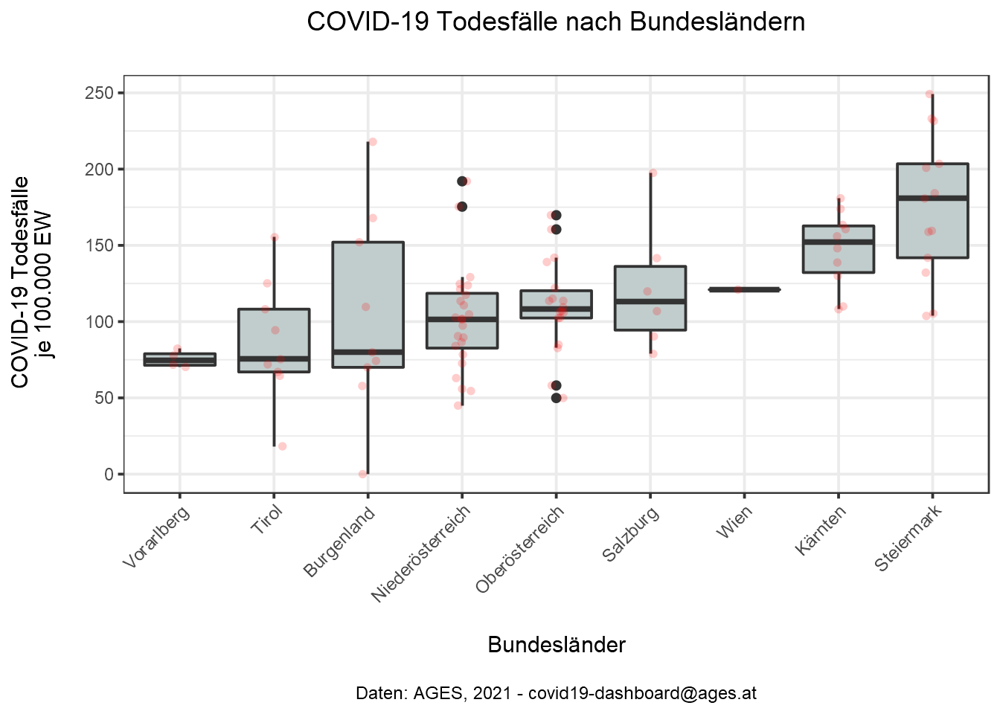
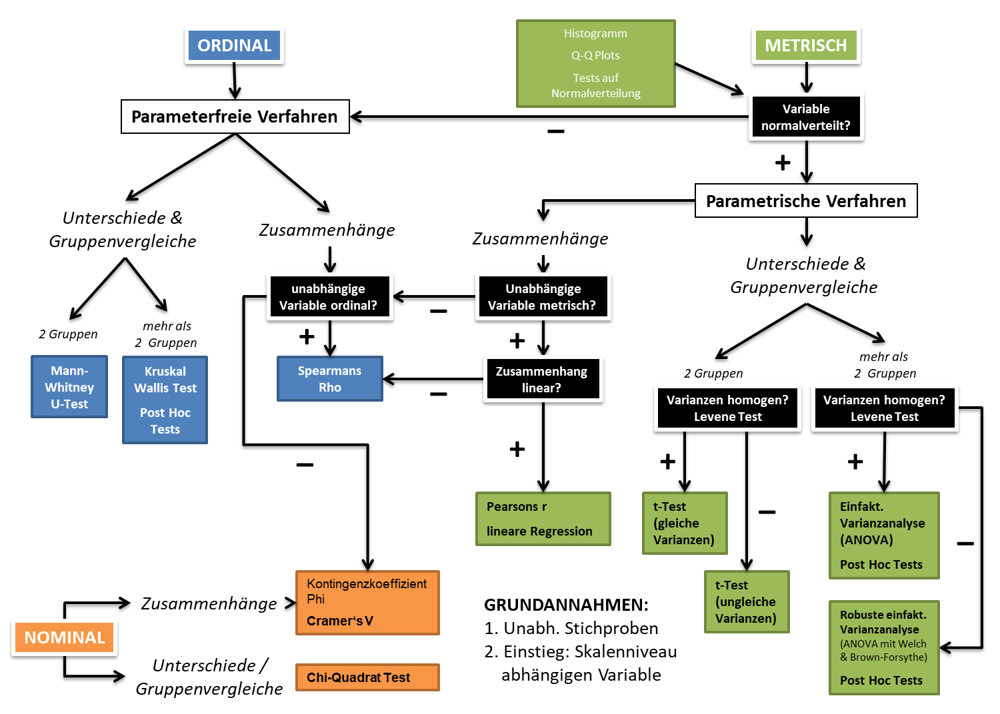
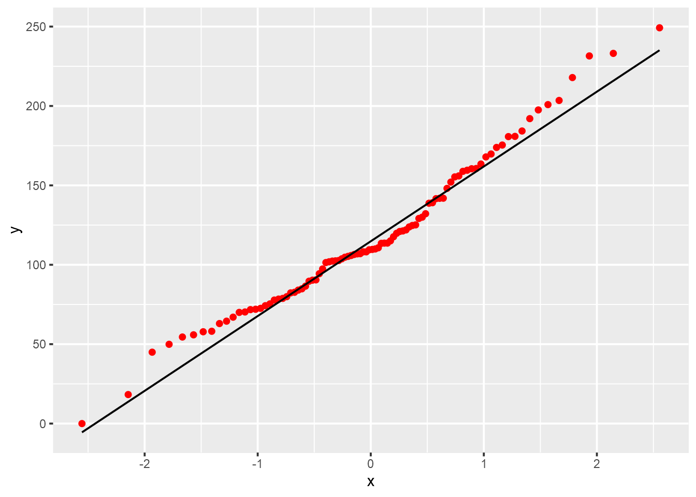
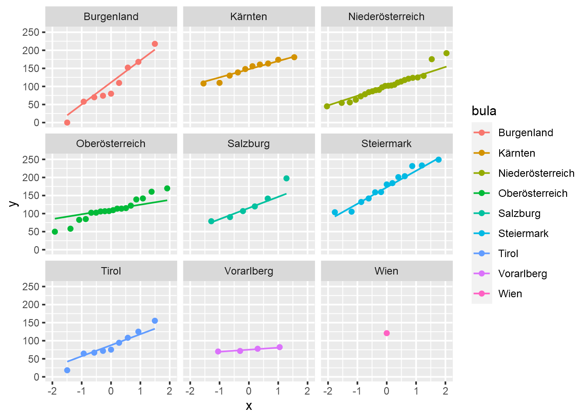
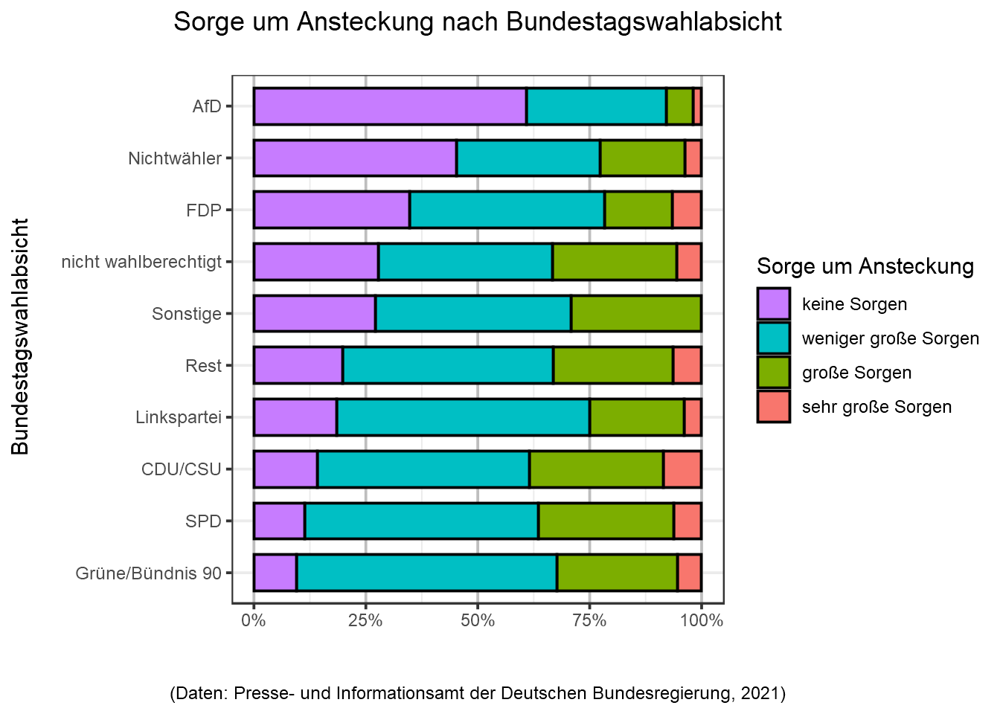

<!DOCTYPE html>
<html lang="" xml:lang="">
<head>

  <meta charset="utf-8" />
  <meta http-equiv="X-UA-Compatible" content="IE=edge" />
  <title>11 Gruppenunterschiede erforschen | How 2 do Things with Numbers (SS 2022)</title>
  <meta name="description" content="11 Gruppenunterschiede erforschen | How 2 do Things with Numbers (SS 2022)" />
  <meta name="generator" content="bookdown 0.24 and GitBook 2.6.7" />

  <meta property="og:title" content="11 Gruppenunterschiede erforschen | How 2 do Things with Numbers (SS 2022)" />
  <meta property="og:type" content="book" />
  
  
  
  

  <meta name="twitter:card" content="summary" />
  <meta name="twitter:title" content="11 Gruppenunterschiede erforschen | How 2 do Things with Numbers (SS 2022)" />
  
  
  

<meta name="author" content="Kami Höferl | https://orcid.org/0000-0002-5397-180X" />


  <meta name="viewport" content="width=device-width, initial-scale=1" />
  <meta name="apple-mobile-web-app-capable" content="yes" />
  <meta name="apple-mobile-web-app-status-bar-style" content="black" />
  
  
<link rel="prev" href="10_metrische_zusammenhaenge.html"/>
<link rel="next" href="666_lit.html"/>
<script src="libs/header-attrs-2.12/header-attrs.js"></script>
<script src="libs/jquery-3.6.0/jquery-3.6.0.min.js"></script>
<script src="https://cdn.jsdelivr.net/npm/fuse.js@6.4.6/dist/fuse.min.js"></script>
<link href="libs/gitbook-2.6.7/css/style.css" rel="stylesheet" />
<link href="libs/gitbook-2.6.7/css/plugin-table.css" rel="stylesheet" />
<link href="libs/gitbook-2.6.7/css/plugin-bookdown.css" rel="stylesheet" />
<link href="libs/gitbook-2.6.7/css/plugin-highlight.css" rel="stylesheet" />
<link href="libs/gitbook-2.6.7/css/plugin-search.css" rel="stylesheet" />
<link href="libs/gitbook-2.6.7/css/plugin-fontsettings.css" rel="stylesheet" />
<link href="libs/gitbook-2.6.7/css/plugin-clipboard.css" rel="stylesheet" />


<link href="libs/anchor-sections-1.1.0/anchor-sections.css" rel="stylesheet" />
<link href="libs/anchor-sections-1.1.0/anchor-sections-hash.css" rel="stylesheet" />
<script src="libs/anchor-sections-1.1.0/anchor-sections.js"></script>
<html>

  <head>
  <script>
    window.addEventListener("load", () => {
        const enabled = document.querySelectorAll(".fullscreen-enabled");
        for (let i = 0; i < enabled.length; i++) {
            enabled[i].style.cursor = "pointer";
            enabled[i].onclick = () => {
                enabled[i].requestFullscreen();
            };
        }
    });
  </script>
  </head>

  <body>
  <!-- body content here -->
  </body>

</html>


<style type="text/css">
pre > code.sourceCode { white-space: pre; position: relative; }
pre > code.sourceCode > span { display: inline-block; line-height: 1.25; }
pre > code.sourceCode > span:empty { height: 1.2em; }
.sourceCode { overflow: visible; }
code.sourceCode > span { color: inherit; text-decoration: inherit; }
pre.sourceCode { margin: 0; }
@media screen {
div.sourceCode { overflow: auto; }
}
@media print {
pre > code.sourceCode { white-space: pre-wrap; }
pre > code.sourceCode > span { text-indent: -5em; padding-left: 5em; }
}
pre.numberSource code
  { counter-reset: source-line 0; }
pre.numberSource code > span
  { position: relative; left: -4em; counter-increment: source-line; }
pre.numberSource code > span > a:first-child::before
  { content: counter(source-line);
    position: relative; left: -1em; text-align: right; vertical-align: baseline;
    border: none; display: inline-block;
    -webkit-touch-callout: none; -webkit-user-select: none;
    -khtml-user-select: none; -moz-user-select: none;
    -ms-user-select: none; user-select: none;
    padding: 0 4px; width: 4em;
    color: #aaaaaa;
  }
pre.numberSource { margin-left: 3em; border-left: 1px solid #aaaaaa;  padding-left: 4px; }
div.sourceCode
  {   }
@media screen {
pre > code.sourceCode > span > a:first-child::before { text-decoration: underline; }
}
code span.al { color: #ff0000; font-weight: bold; } /* Alert */
code span.an { color: #60a0b0; font-weight: bold; font-style: italic; } /* Annotation */
code span.at { color: #7d9029; } /* Attribute */
code span.bn { color: #40a070; } /* BaseN */
code span.bu { } /* BuiltIn */
code span.cf { color: #007020; font-weight: bold; } /* ControlFlow */
code span.ch { color: #4070a0; } /* Char */
code span.cn { color: #880000; } /* Constant */
code span.co { color: #60a0b0; font-style: italic; } /* Comment */
code span.cv { color: #60a0b0; font-weight: bold; font-style: italic; } /* CommentVar */
code span.do { color: #ba2121; font-style: italic; } /* Documentation */
code span.dt { color: #902000; } /* DataType */
code span.dv { color: #40a070; } /* DecVal */
code span.er { color: #ff0000; font-weight: bold; } /* Error */
code span.ex { } /* Extension */
code span.fl { color: #40a070; } /* Float */
code span.fu { color: #06287e; } /* Function */
code span.im { } /* Import */
code span.in { color: #60a0b0; font-weight: bold; font-style: italic; } /* Information */
code span.kw { color: #007020; font-weight: bold; } /* Keyword */
code span.op { color: #666666; } /* Operator */
code span.ot { color: #007020; } /* Other */
code span.pp { color: #bc7a00; } /* Preprocessor */
code span.sc { color: #4070a0; } /* SpecialChar */
code span.ss { color: #bb6688; } /* SpecialString */
code span.st { color: #4070a0; } /* String */
code span.va { color: #19177c; } /* Variable */
code span.vs { color: #4070a0; } /* VerbatimString */
code span.wa { color: #60a0b0; font-weight: bold; font-style: italic; } /* Warning */
</style>

<style type="text/css">
/* Used with Pandoc 2.11+ new --citeproc when CSL is used */
div.csl-bib-body { }
div.csl-entry {
  clear: both;
}
.hanging div.csl-entry {
  margin-left:2em;
  text-indent:-2em;
}
div.csl-left-margin {
  min-width:2em;
  float:left;
}
div.csl-right-inline {
  margin-left:2em;
  padding-left:1em;
}
div.csl-indent {
  margin-left: 2em;
}
</style>

<link rel="stylesheet" href="style.css" type="text/css" />
</head>

<body>


  <div class="book without-animation with-summary font-size-2 font-family-1" data-basepath=".">

    <div class="book-summary">
      <nav role="navigation">

<ul class="summary">
<li><a href="index.html#howdy">Howdy<span></span></a></li>
<li class="chapter" data-level="1" data-path="01_syllabus.html"><a href="01_syllabus.html"><i class="fa fa-check"></i><b>1</b> Ouvertüre (aka “Syllabus”)<span></span></a>
<ul>
<li class="chapter" data-level="1.1" data-path="01_syllabus.html"><a href="01_syllabus.html#lernziele"><i class="fa fa-check"></i><b>1.1</b> Lernziele<span></span></a></li>
<li class="chapter" data-level="1.2" data-path="01_syllabus.html"><a href="01_syllabus.html#zeitplanung"><i class="fa fa-check"></i><b>1.2</b> Zeitplanung<span></span></a></li>
<li class="chapter" data-level="1.3" data-path="01_syllabus.html"><a href="01_syllabus.html#rulez-of-the-game"><i class="fa fa-check"></i><b>1.3</b> Rulez of the Game<span></span></a></li>
<li class="chapter" data-level="1.4" data-path="01_syllabus.html"><a href="01_syllabus.html#übungsteile"><i class="fa fa-check"></i><b>1.4</b> Übungsteile<span></span></a></li>
<li class="chapter" data-level="1.5" data-path="01_syllabus.html"><a href="01_syllabus.html#bewertungskriterien"><i class="fa fa-check"></i><b>1.5</b> Bewertungskriterien<span></span></a></li>
<li class="chapter" data-level="1.6" data-path="01_syllabus.html"><a href="01_syllabus.html#formelles-zu-den-übungsarbeiten"><i class="fa fa-check"></i><b>1.6</b> Formelles zu den Übungsarbeiten<span></span></a></li>
<li class="chapter" data-level="1.7" data-path="01_syllabus.html"><a href="01_syllabus.html#empfehlung-zur-eingesetzten-software"><i class="fa fa-check"></i><b>1.7</b> Empfehlung zur eingesetzten Software<span></span></a></li>
<li class="chapter" data-level="1.8" data-path="01_syllabus.html"><a href="01_syllabus.html#ausgewählte-hilfestellungen-zum-thema-r-und-rstudio"><i class="fa fa-check"></i><b>1.8</b> Ausgewählte Hilfestellungen zum Thema R und RStudio<span></span></a></li>
<li class="chapter" data-level="1.9" data-path="01_syllabus.html"><a href="01_syllabus.html#literatur"><i class="fa fa-check"></i><b>1.9</b> Literatur zur Lehrveranstaltung<span></span></a></li>
</ul></li>
<li class="chapter" data-level="2" data-path="02_forschungsprozess.html"><a href="02_forschungsprozess.html"><i class="fa fa-check"></i><b>2</b> Wege zum empirischen Forschen<span></span></a>
<ul>
<li><a href="02_forschungsprozess.html#zielsetzung-dieser-einheit">📢 Zielsetzung dieser Einheit<span></span></a></li>
<li class="chapter" data-level="2.1" data-path="02_forschungsprozess.html"><a href="02_forschungsprozess.html#wozu-empirie"><i class="fa fa-check"></i><b>2.1</b> Wozu Empirie?<span></span></a></li>
<li class="chapter" data-level="2.2" data-path="02_forschungsprozess.html"><a href="02_forschungsprozess.html#aber-wie"><i class="fa fa-check"></i><b>2.2</b> Aber wie?<span></span></a></li>
<li class="chapter" data-level="2.3" data-path="02_forschungsprozess.html"><a href="02_forschungsprozess.html#hauptsache-daten"><i class="fa fa-check"></i><b>2.3</b> Hauptsache Daten?<span></span></a></li>
</ul></li>
<li class="chapter" data-level="3" data-path="03_messen.html"><a href="03_messen.html"><i class="fa fa-check"></i><b>3</b> Warmup: Messen und Skalen<span></span></a>
<ul>
<li><a href="03_messen.html#zielsetzung-dieser-einheit-1">📢 Zielsetzung dieser Einheit<span></span></a></li>
<li class="chapter" data-level="3.1" data-path="03_messen.html"><a href="03_messen.html#was-passiert-beim-messen"><i class="fa fa-check"></i><b>3.1</b> Was passiert beim Messen?<span></span></a></li>
<li class="chapter" data-level="3.2" data-path="03_messen.html"><a href="03_messen.html#skalenniveaus-reloaded"><i class="fa fa-check"></i><b>3.2</b> Skalenniveaus (reloaded)<span></span></a></li>
</ul></li>
<li class="chapter" data-level="4" data-path="04_messen_primaer_sekundaerdaten.html"><a href="04_messen_primaer_sekundaerdaten.html"><i class="fa fa-check"></i><b>4</b> Sekundärdaten gewinnen<span></span></a>
<ul>
<li><a href="04_messen_primaer_sekundaerdaten.html#zielsetzung-dieser-einheit-2">📢 Zielsetzung dieser Einheit<span></span></a></li>
<li class="chapter" data-level="4.1" data-path="04_messen_primaer_sekundaerdaten.html"><a href="04_messen_primaer_sekundaerdaten.html#sekundär-daten-gewinnen"><i class="fa fa-check"></i><b>4.1</b> (Sekundär-)Daten gewinnen<span></span></a>
<ul>
<li class="chapter" data-level="4.1.1" data-path="04_messen_primaer_sekundaerdaten.html"><a href="04_messen_primaer_sekundaerdaten.html#ein-technischer-aspekt-der-gewinnung-von-sekundärdaten"><i class="fa fa-check"></i><b>4.1.1</b> Ein technischer Aspekt der Gewinnung von Sekundärdaten<span></span></a></li>
</ul></li>
<li class="chapter" data-level="4.2" data-path="04_messen_primaer_sekundaerdaten.html"><a href="04_messen_primaer_sekundaerdaten.html#zur-qualität-von-sekundärdaten"><i class="fa fa-check"></i><b>4.2</b> Zur Qualität von Sekundärdaten<span></span></a></li>
<li class="chapter" data-level="4.3" data-path="04_messen_primaer_sekundaerdaten.html"><a href="04_messen_primaer_sekundaerdaten.html#sekundärdaten-als-open-data-nutzen-können"><i class="fa fa-check"></i><b>4.3</b> Sekundärdaten als “Open Data” nutzen (können)<span></span></a></li>
</ul></li>
<li class="chapter" data-level="5" data-path="05_primaererhebung.html"><a href="05_primaererhebung.html"><i class="fa fa-check"></i><b>5</b> Primärdaten gewinnen<span></span></a>
<ul>
<li><a href="05_primaererhebung.html#zielsetzung-dieser-einheit-3">📢 Zielsetzung dieser Einheit<span></span></a></li>
<li class="chapter" data-level="5.1" data-path="05_primaererhebung.html"><a href="05_primaererhebung.html#nicht-rekative-verfahren"><i class="fa fa-check"></i><b>5.1</b> Nicht-rekative Verfahren<span></span></a></li>
<li class="chapter" data-level="5.2" data-path="05_primaererhebung.html"><a href="05_primaererhebung.html#beobachtungen"><i class="fa fa-check"></i><b>5.2</b> Beobachtungen<span></span></a></li>
<li class="chapter" data-level="5.3" data-path="05_primaererhebung.html"><a href="05_primaererhebung.html#befragungen"><i class="fa fa-check"></i><b>5.3</b> Befragungen<span></span></a></li>
<li class="chapter" data-level="5.4" data-path="05_primaererhebung.html"><a href="05_primaererhebung.html#special-die-stichprobenziehung"><i class="fa fa-check"></i><b>5.4</b> Special: Die Stichprobenziehung<span></span></a></li>
</ul></li>
<li class="chapter" data-level="6" data-path="06_basics_datananalyse.html"><a href="06_basics_datananalyse.html"><i class="fa fa-check"></i><b>6</b> Die Basics zur Datenanalyse<span></span></a>
<ul>
<li><a href="06_basics_datananalyse.html#zielsetzung-dieser-einheit-4">📢 Zielsetzung dieser Einheit<span></span></a></li>
<li class="chapter" data-level="6.1" data-path="06_basics_datananalyse.html"><a href="06_basics_datananalyse.html#daten-analysieren---aber-wie"><i class="fa fa-check"></i><b>6.1</b> Daten analysieren - aber wie?<span></span></a></li>
<li class="chapter" data-level="6.2" data-path="06_basics_datananalyse.html"><a href="06_basics_datananalyse.html#die-hilfsmittel-r-rstudio"><i class="fa fa-check"></i><b>6.2</b> Die Hilfsmittel R &amp; RStudio<span></span></a></li>
<li class="chapter" data-level="6.3" data-path="06_basics_datananalyse.html"><a href="06_basics_datananalyse.html#grundlegende-datenstrukturen-in-r"><i class="fa fa-check"></i><b>6.3</b> Grundlegende Datenstrukturen in R<span></span></a></li>
<li class="chapter" data-level="6.4" data-path="06_basics_datananalyse.html"><a href="06_basics_datananalyse.html#daten-im--und-exportieren"><i class="fa fa-check"></i><b>6.4</b> Daten im- und exportieren<span></span></a>
<ul>
<li class="chapter" data-level="6.4.1" data-path="06_basics_datananalyse.html"><a href="06_basics_datananalyse.html#der-datenimport"><i class="fa fa-check"></i><b>6.4.1</b> Der Datenimport<span></span></a></li>
<li class="chapter" data-level="6.4.2" data-path="06_basics_datananalyse.html"><a href="06_basics_datananalyse.html#der-datenexport"><i class="fa fa-check"></i><b>6.4.2</b> Der Datenexport<span></span></a></li>
</ul></li>
</ul></li>
<li class="chapter" data-level="7" data-path="07_n_kategoriale_variablen.html"><a href="07_n_kategoriale_variablen.html"><i class="fa fa-check"></i><b>7</b> Die Häufigkeitsanalyse kategorialer Daten<span></span></a>
<ul>
<li><a href="07_n_kategoriale_variablen.html#zielsetzung-dieser-einheit-5">📢 Zielsetzung dieser Einheit<span></span></a></li>
<li class="chapter" data-level="7.1" data-path="07_n_kategoriale_variablen.html"><a href="07_n_kategoriale_variablen.html#katdatasetup"><i class="fa fa-check"></i><b>7.1</b> Kategoriale Daten auswerten<span></span></a></li>
<li class="chapter" data-level="7.2" data-path="07_n_kategoriale_variablen.html"><a href="07_n_kategoriale_variablen.html#vorbereitendes"><i class="fa fa-check"></i><b>7.2</b> Vorbereitendes<span></span></a></li>
<li class="chapter" data-level="7.3" data-path="07_n_kategoriale_variablen.html"><a href="07_n_kategoriale_variablen.html#katdatamanipul"><i class="fa fa-check"></i><b>7.3</b> Der Datenimport, die Datenaufbereitung und -validierung<span></span></a></li>
<li class="chapter" data-level="7.4" data-path="07_n_kategoriale_variablen.html"><a href="07_n_kategoriale_variablen.html#die-häufikgeitsanalyse-einer-variablen"><i class="fa fa-check"></i><b>7.4</b> Die Häufikgeitsanalyse einer Variablen<span></span></a></li>
<li class="chapter" data-level="7.5" data-path="07_n_kategoriale_variablen.html"><a href="07_n_kategoriale_variablen.html#katdatabivarn"><i class="fa fa-check"></i><b>7.5</b> Die Häufigkeitsanalyse zweier kategorialer Variablen<span></span></a></li>
</ul></li>
<li class="chapter" data-level="8" data-path="08_zusammenhaenge_kategoriale_variablen.html"><a href="08_zusammenhaenge_kategoriale_variablen.html"><i class="fa fa-check"></i><b>8</b> Zusammenhänge zwischen kategorialen Variablen<span></span></a>
<ul>
<li><a href="08_zusammenhaenge_kategoriale_variablen.html#zielsetzung-dieser-einheit-6">📢 Zielsetzung dieser Einheit<span></span></a></li>
<li class="chapter" data-level="8.1" data-path="08_zusammenhaenge_kategoriale_variablen.html"><a href="08_zusammenhaenge_kategoriale_variablen.html#die-ausgangslage"><i class="fa fa-check"></i><b>8.1</b> Die Ausgangslage<span></span></a></li>
<li class="chapter" data-level="8.2" data-path="08_zusammenhaenge_kategoriale_variablen.html"><a href="08_zusammenhaenge_kategoriale_variablen.html#zusammenhänge-zwischen-zwei-kategorialen-variablen-messen---die-theorie"><i class="fa fa-check"></i><b>8.2</b> Zusammenhänge zwischen zwei kategorialen Variablen messen - die Theorie<span></span></a></li>
<li class="chapter" data-level="8.3" data-path="08_zusammenhaenge_kategoriale_variablen.html"><a href="08_zusammenhaenge_kategoriale_variablen.html#überprüfung-des-zusammenhangs-zwischen-politischer-orientierung-und-angemessenheit-des-pandemiemanagements"><i class="fa fa-check"></i><b>8.3</b> Überprüfung des Zusammenhangs zwischen politischer Orientierung und Angemessenheit des Pandemiemanagements<span></span></a></li>
<li class="chapter" data-level="8.4" data-path="08_zusammenhaenge_kategoriale_variablen.html"><a href="08_zusammenhaenge_kategoriale_variablen.html#charakterisierung-des-zusammenhang-mittels-der-pearson-residuen"><i class="fa fa-check"></i><b>8.4</b> Charakterisierung des Zusammenhang mittels der Pearson Residuen<span></span></a></li>
<li class="chapter" data-level="8.5" data-path="08_zusammenhaenge_kategoriale_variablen.html"><a href="08_zusammenhaenge_kategoriale_variablen.html#beurteilung-der-stärke-des-zusammenhangs-mit-cramers-v"><i class="fa fa-check"></i><b>8.5</b> Beurteilung der Stärke des Zusammenhangs mit Cramers V<span></span></a></li>
</ul></li>
<li class="chapter" data-level="9" data-path="09_deskriptive_statistik_metrisch.html"><a href="09_deskriptive_statistik_metrisch.html"><i class="fa fa-check"></i><b>9</b> Deskriptive Statistik für metrische Daten<span></span></a>
<ul>
<li><a href="09_deskriptive_statistik_metrisch.html#zielsetzung-dieser-einheit-7">📢 Zielsetzung dieser Einheit<span></span></a></li>
<li class="chapter" data-level="9.1" data-path="09_deskriptive_statistik_metrisch.html"><a href="09_deskriptive_statistik_metrisch.html#ausgangDeskriptivMetrisch"><i class="fa fa-check"></i><b>9.1</b> Die Ausgangslage<span></span></a></li>
<li class="chapter" data-level="9.2" data-path="09_deskriptive_statistik_metrisch.html"><a href="09_deskriptive_statistik_metrisch.html#der-datenimport-die-datenaufbereitung-und--validierung"><i class="fa fa-check"></i><b>9.2</b> Der Datenimport, die Datenaufbereitung und -validierung<span></span></a></li>
<li class="chapter" data-level="9.3" data-path="09_deskriptive_statistik_metrisch.html"><a href="09_deskriptive_statistik_metrisch.html#ein-blick-auf-klassische-lage--und-streuungsparameter"><i class="fa fa-check"></i><b>9.3</b> Ein Blick auf klassische Lage- und Streuungsparameter<span></span></a></li>
<li class="chapter" data-level="9.4" data-path="09_deskriptive_statistik_metrisch.html"><a href="09_deskriptive_statistik_metrisch.html#exkurs-für-motivierte-geographinnen-räumlich-explizite-deskription"><i class="fa fa-check"></i><b>9.4</b> Exkurs für motivierte GeographInnen: Räumlich explizite Deskription<span></span></a></li>
<li class="chapter" data-level="9.5" data-path="09_deskriptive_statistik_metrisch.html"><a href="09_deskriptive_statistik_metrisch.html#lage--und-streuungsparameter-graphisch-darstellen"><i class="fa fa-check"></i><b>9.5</b> Lage- und Streuungsparameter graphisch darstellen<span></span></a>
<ul>
<li class="chapter" data-level="9.5.1" data-path="09_deskriptive_statistik_metrisch.html"><a href="09_deskriptive_statistik_metrisch.html#histogramme"><i class="fa fa-check"></i><b>9.5.1</b> <strong>Histogramme</strong><span></span></a></li>
<li class="chapter" data-level="9.5.2" data-path="09_deskriptive_statistik_metrisch.html"><a href="09_deskriptive_statistik_metrisch.html#boxplots"><i class="fa fa-check"></i><b>9.5.2</b> <strong>Boxplots</strong><span></span></a></li>
</ul></li>
<li class="chapter" data-level="9.6" data-path="09_deskriptive_statistik_metrisch.html"><a href="09_deskriptive_statistik_metrisch.html#ein-erster-blick-auf-mögliche-zusammenhänge"><i class="fa fa-check"></i><b>9.6</b> Ein erster Blick auf mögliche Zusammenhänge<span></span></a></li>
</ul></li>
<li class="chapter" data-level="10" data-path="10_metrische_zusammenhaenge.html"><a href="10_metrische_zusammenhaenge.html"><i class="fa fa-check"></i><b>10</b> Zusammenhänge zwischen zwei metrischen Variablen<span></span></a>
<ul>
<li><a href="10_metrische_zusammenhaenge.html#zielsetzung-dieser-einheit-8">📢 Zielsetzung dieser Einheit<span></span></a></li>
<li class="chapter" data-level="10.1" data-path="10_metrische_zusammenhaenge.html"><a href="10_metrische_zusammenhaenge.html#die-ausgangslage-1"><i class="fa fa-check"></i><b>10.1</b> Die Ausgangslage<span></span></a></li>
<li class="chapter" data-level="10.2" data-path="10_metrische_zusammenhaenge.html"><a href="10_metrische_zusammenhaenge.html#datenimport-und--aufbereitung"><i class="fa fa-check"></i><b>10.2</b> Datenimport und -aufbereitung<span></span></a></li>
<li class="chapter" data-level="10.3" data-path="10_metrische_zusammenhaenge.html"><a href="10_metrische_zusammenhaenge.html#den-zusammenhang-graphisch-erkunden"><i class="fa fa-check"></i><b>10.3</b> Den Zusammenhang graphisch erkunden<span></span></a></li>
<li class="chapter" data-level="10.4" data-path="10_metrische_zusammenhaenge.html"><a href="10_metrische_zusammenhaenge.html#den-zusammenhang-numerisch-abbilden"><i class="fa fa-check"></i><b>10.4</b> Den Zusammenhang numerisch abbilden<span></span></a>
<ul>
<li class="chapter" data-level="10.4.1" data-path="10_metrische_zusammenhaenge.html"><a href="10_metrische_zusammenhaenge.html#überprüfung-der-normalverteilung"><i class="fa fa-check"></i><b>10.4.1</b> Überprüfung der Normalverteilung<span></span></a></li>
<li class="chapter" data-level="10.4.2" data-path="10_metrische_zusammenhaenge.html"><a href="10_metrische_zusammenhaenge.html#messung-des-zusammenhangs-zwischen-covid-erkrankungen-und-todesfällen-mittels-rangkorrelation"><i class="fa fa-check"></i><b>10.4.2</b> Messung des Zusammenhangs zwischen COVID Erkrankungen und Todesfällen mittels Rangkorrelation<span></span></a></li>
<li class="chapter" data-level="10.4.3" data-path="10_metrische_zusammenhaenge.html"><a href="10_metrische_zusammenhaenge.html#messung-des-zusammenhangs-zwischen-covid-erkrankungen-und-todesfällen-mittels-des-korrelationskoeffizienten-nach-pearson"><i class="fa fa-check"></i><b>10.4.3</b> Messung des Zusammenhangs zwischen COVID Erkrankungen und Todesfällen mittels des Korrelationskoeffizienten nach Pearson<span></span></a></li>
<li class="chapter" data-level="10.4.4" data-path="10_metrische_zusammenhaenge.html"><a href="10_metrische_zusammenhaenge.html#ermittlung-der-bundeslandspezifischen-rangkorrelationskoeffizienten"><i class="fa fa-check"></i><b>10.4.4</b> Ermittlung der bundeslandspezifischen Rangkorrelationskoeffizienten<span></span></a></li>
</ul></li>
<li class="chapter" data-level="10.5" data-path="10_metrische_zusammenhaenge.html"><a href="10_metrische_zusammenhaenge.html#lineare-regression-als-alternativer-zugang"><i class="fa fa-check"></i><b>10.5</b> Lineare Regression als alternativer Zugang<span></span></a></li>
<li class="chapter" data-level="10.6" data-path="10_metrische_zusammenhaenge.html"><a href="10_metrische_zusammenhaenge.html#konklusio"><i class="fa fa-check"></i><b>10.6</b> Konklusio<span></span></a></li>
</ul></li>
<li class="chapter" data-level="11" data-path="11_gruppenunterschiede_v2.html"><a href="11_gruppenunterschiede_v2.html"><i class="fa fa-check"></i><b>11</b> Gruppenunterschiede erforschen<span></span></a>
<ul>
<li><a href="11_gruppenunterschiede_v2.html#zielsetzung-dieser-einheit-9">📢 Zielsetzung dieser Einheit<span></span></a></li>
<li class="chapter" data-level="11.1" data-path="11_gruppenunterschiede_v2.html"><a href="11_gruppenunterschiede_v2.html#die-ausgangslage-2"><i class="fa fa-check"></i><b>11.1</b> Die Ausgangslage<span></span></a></li>
<li class="chapter" data-level="11.2" data-path="11_gruppenunterschiede_v2.html"><a href="11_gruppenunterschiede_v2.html#datenimport-und--aufbereitung-1"><i class="fa fa-check"></i><b>11.2</b> Datenimport und -aufbereitung<span></span></a></li>
<li class="chapter" data-level="11.3" data-path="11_gruppenunterschiede_v2.html"><a href="11_gruppenunterschiede_v2.html#vorbereitende-überlegungen"><i class="fa fa-check"></i><b>11.3</b> Vorbereitende Überlegungen<span></span></a>
<ul>
<li class="chapter" data-level="11.3.1" data-path="11_gruppenunterschiede_v2.html"><a href="11_gruppenunterschiede_v2.html#ermitteln-des-passenden-verfahrens"><i class="fa fa-check"></i><b>11.3.1</b> Ermitteln des passenden Verfahrens<span></span></a></li>
</ul></li>
<li class="chapter" data-level="11.4" data-path="11_gruppenunterschiede_v2.html"><a href="11_gruppenunterschiede_v2.html#gruppenunterschiede-bei-normalverteilten-variablen-mittels-varianzanalyse-untersuchen"><i class="fa fa-check"></i><b>11.4</b> Gruppenunterschiede bei normalverteilten Variablen mittels Varianzanalyse untersuchen<span></span></a>
<ul>
<li class="chapter" data-level="11.4.1" data-path="11_gruppenunterschiede_v2.html"><a href="11_gruppenunterschiede_v2.html#welch"><i class="fa fa-check"></i><b>11.4.1</b> Gruppenunterschiede bei Variablen mit Varianzheterogenität erkunden<span></span></a></li>
</ul></li>
<li class="chapter" data-level="11.5" data-path="11_gruppenunterschiede_v2.html"><a href="11_gruppenunterschiede_v2.html#gruppenunterschiede-bei-ordinalen-oder-nicht-normalverteilten-variablen"><i class="fa fa-check"></i><b>11.5</b> Gruppenunterschiede bei ordinalen oder nicht normalverteilten Variablen<span></span></a>
<ul>
<li class="chapter" data-level="11.5.1" data-path="11_gruppenunterschiede_v2.html"><a href="11_gruppenunterschiede_v2.html#vorbereitendes-1"><i class="fa fa-check"></i><b>11.5.1</b> Vorbereitendes<span></span></a></li>
<li class="chapter" data-level="11.5.2" data-path="11_gruppenunterschiede_v2.html"><a href="11_gruppenunterschiede_v2.html#eine-erster-blick-auf-die-politischen-gruppen-und-deren-sorge-vor-einer-ansteckung"><i class="fa fa-check"></i><b>11.5.2</b> Eine erster Blick auf die politischen Gruppen und deren Sorge vor einer Ansteckung<span></span></a></li>
<li class="chapter" data-level="11.5.3" data-path="11_gruppenunterschiede_v2.html"><a href="11_gruppenunterschiede_v2.html#gruppenunterschieden-mit-dem-kruskal-wallis-test-nachgehen"><i class="fa fa-check"></i><b>11.5.3</b> Gruppenunterschieden mit dem Kruskal-Wallis-Test nachgehen<span></span></a></li>
</ul></li>
</ul></li>
<li class="chapter" data-level="12" data-path="666_lit.html"><a href="666_lit.html"><i class="fa fa-check"></i><b>12</b> Quellen<span></span></a></li>
<li class="chapter" data-level="13" data-path="80_athome1.html"><a href="80_athome1.html"><i class="fa fa-check"></i><b>13</b> @Home1: Einen Fragebogen in Limesurvey umsetzen<span></span></a>
<ul>
<li><a href="80_athome1.html#zielsetzung">📢 Zielsetzung<span></span></a></li>
<li class="chapter" data-level="13.1" data-path="80_athome1.html"><a href="80_athome1.html#ausgangslage"><i class="fa fa-check"></i><b>13.1</b> Ausgangslage<span></span></a></li>
<li class="chapter" data-level="13.2" data-path="80_athome1.html"><a href="80_athome1.html#aufgabenstellung"><i class="fa fa-check"></i><b>13.2</b> Aufgabenstellung<span></span></a></li>
<li class="chapter" data-level="13.3" data-path="80_athome1.html"><a href="80_athome1.html#formelles"><i class="fa fa-check"></i><b>13.3</b> Formelles<span></span></a></li>
</ul></li>
<li class="chapter" data-level="14" data-path="81_athome2.html"><a href="81_athome2.html"><i class="fa fa-check"></i><b>14</b> @Home2: Eine einfache Quotenstichprobe<span></span></a>
<ul>
<li><a href="81_athome2.html#zielsetzung-1">📢 Zielsetzung<span></span></a></li>
<li class="chapter" data-level="14.1" data-path="81_athome2.html"><a href="81_athome2.html#ausgangslage-1"><i class="fa fa-check"></i><b>14.1</b> Ausgangslage<span></span></a></li>
<li class="chapter" data-level="14.2" data-path="81_athome2.html"><a href="81_athome2.html#aufgabenstellung-1"><i class="fa fa-check"></i><b>14.2</b> Aufgabenstellung<span></span></a></li>
<li class="chapter" data-level="14.3" data-path="81_athome2.html"><a href="81_athome2.html#formelles-1"><i class="fa fa-check"></i><b>14.3</b> Formelles<span></span></a></li>
</ul></li>
<li class="chapter" data-level="15" data-path="82_athome3.html"><a href="82_athome3.html"><i class="fa fa-check"></i><b>15</b> @Home3: Zusammenhänge und Unterschiede<span></span></a>
<ul>
<li><a href="82_athome3.html#zielsetzung-2">📢 Zielsetzung<span></span></a></li>
<li class="chapter" data-level="15.1" data-path="82_athome3.html"><a href="82_athome3.html#beispiel-a-covid-19-impfungen-in-österreich"><i class="fa fa-check"></i><b>15.1</b> Beispiel A: COVID-19 Impfungen in Österreich<span></span></a></li>
<li class="chapter" data-level="15.2" data-path="82_athome3.html"><a href="82_athome3.html#beispiel-b-bundesdeutsche-wahrnehmungen-zur-covid-19-pandemie"><i class="fa fa-check"></i><b>15.2</b> Beispiel B: Bundesdeutsche Wahrnehmungen zur COVID-19 Pandemie<span></span></a></li>
<li class="chapter" data-level="15.3" data-path="82_athome3.html"><a href="82_athome3.html#formalia"><i class="fa fa-check"></i><b>15.3</b> Formalia<span></span></a>
<ul>
<li class="chapter" data-level="15.3.1" data-path="82_athome3.html"><a href="82_athome3.html#deadline-verpasst"><i class="fa fa-check"></i><b>15.3.1</b> Deadline verpasst?<span></span></a></li>
</ul></li>
</ul></li>
</ul>

      </nav>
    </div>

    <div class="book-body">
      <div class="body-inner">
        <div class="book-header" role="navigation">
          <h1>
            <i class="fa fa-circle-o-notch fa-spin"></i><a href="./">How 2 do Things with Numbers (SS 2022)</a>
          </h1>
        </div>

        <div class="page-wrapper" tabindex="-1" role="main">
          <div class="page-inner">

            <section class="normal" id="section-">
<div id="gruppenunterschiede" class="section level1 hasAnchor" number="11">
<h1><span class="header-section-number">11</span> Gruppenunterschiede erforschen<a href="11_gruppenunterschiede_v2.html#gruppenunterschiede" class="anchor-section" aria-label="Anchor link to header"></a></h1>
<div id="zielsetzung-dieser-einheit-9" class="section level2 unnumbered hasAnchor">
<h2>📢 Zielsetzung dieser Einheit<a href="#zielsetzung-dieser-einheit-9" class="anchor-section" aria-label="Anchor link to header"></a></h2>
<p>In dieser Einheit wollen wir uns dem Erkunden von <strong>Gruppenunterschieden</strong> widmen. Dazu werden wir</p>
<ul>
<li>die Frage behandeln, welche <strong>prinzipiellen Verfahren</strong> uns dazu zur Verfügung stehen;</li>
<li>anhand eines Beispiels Varianten der <strong>einfaktoriellen Varianzanalyse</strong> als Vertreter parametrischer Verfahren ausprobieren;</li>
<li>anhand eines Beispiels den <strong>Kurskal-Wallis-Test</strong> als Vertreter nicht parametrischer Verfahren kennenlernen.</li>
</ul>
<p>
<strong>tl;dr: </strong><a href="https://kamihoeferl.at/lehre/vu_sozwiss_1/11_gruppenunterschiede_v2.R" type="application/octet-stream">Her mit dem Code!</a>
</p>
<hr />
</div>
<div id="die-ausgangslage-2" class="section level2 hasAnchor" number="11.1">
<h2><span class="header-section-number">11.1</span> Die Ausgangslage<a href="11_gruppenunterschiede_v2.html#die-ausgangslage-2" class="anchor-section" aria-label="Anchor link to header"></a></h2>
<p>Oftmals stellt sich bei Analysen die Frage, ob zwischen Gruppen Unterschiede bestehen. Beispielsweise, ob es einen Einkommensunterschied zwischen Männern und Frauen gibt. Deskriptive Zugänge wie der qualitative Vergleich von Lageparametern kann dazu eine gute Grundlagen bilden. Einen Test auf Signifikanz kann so aber nicht erbracht werden. Daher wurden eine Reihe unterschiedlicher Testverfahren zur Prüfung signifikanter Gruppenunterschiede entwickelt.</p>
<p>Aufbauend auf das aus der letzten Einheit <a href="10_metrische_zusammenhaenge.html#zusammenhaenge-metrisch">10</a> bekannten Beispiel zum COVID-19 Infektionsgeschehen in Österreich wollen wir in dieser Einheit folgender Frage nachgehen:</p>
<p>🤔 <strong>Sehen wir bei den an und mit COVID-19 Verstorbenen je 100.000 Einwohnern Unterschiede zwischen den Bundesländern?</strong></p>
<p>Erneut nutzen wir die aus Einheit <a href="09_deskriptive_statistik_metrisch.html#ausgangDeskriptivMetrisch">9.1</a> bekannten Beispieldaten der <a href="https://www.ages.at/startseite/">Österreichischen Agentur für Gesundheit und Ernährungssicherheit AGE</a> zu <a href="https://www.data.gv.at/katalog/dataset/2f6649b6-2b2d-49a9-ab31-6c7e43728001">COVID-19 Fällen in den politischen Bezirken Österreich</a>.</p>
<p><strong>Ein praktischer Hinweis:</strong><br />
Um diese Einheit auch zu einem späteren Zeitpunkt nachvollziehen zu können, werden nicht die tagesaktuellen Daten der AGES genutzt. Stattdessen wurden diese Daten zum Stichtag 25.05.2021 bezogen und als CSV-Datensatz abgelegt. Diese Stichtagsdaten können <a href="data/agesRohdaten_25-05-21.csv"><strong>hier als CSV-Datei heruntergeladen</strong></a> werden.</p>
<blockquote>
<p><strong>👉 Anmerkung</strong>: Wir gehen in dieser Einheit von folgender Verzeichnisstruktur aus:</p>
</blockquote>
<pre><code>**Projektfolder**
| skript_1.R
| ...
| skript_n.R    
+-- data
|     | datensatz_1.xyz
|     | ...
|     | datensatz_n.xyz
+-- output</code></pre>
</div>
<div id="datenimport-und--aufbereitung-1" class="section level2 hasAnchor" number="11.2">
<h2><span class="header-section-number">11.2</span> Datenimport und -aufbereitung<a href="11_gruppenunterschiede_v2.html#datenimport-und--aufbereitung-1" class="anchor-section" aria-label="Anchor link to header"></a></h2>
<p>Bevor wir uns der Erkundung möglicher Gruppenunterschiede widmen können, müssen wir zunächst</p>
<ul>
<li>die Rohdaten <strong>importieren</strong></li>
<li>eine <strong>Normierung</strong> der Daten vornehmen (Variablen “…_100k”)</li>
<li>und die <strong>Bundeslandzugehörigkeit</strong> der Bezirke (Variable “bula”) ermitteln.</li>
</ul>
<p>Un damit kommen wir zu Folgendem:</p>
<div class="sourceCode" id="cb156"><pre class="sourceCode r"><code class="sourceCode r"><span id="cb156-1"><a href="11_gruppenunterschiede_v2.html#cb156-1" aria-hidden="true" tabindex="-1"></a><span class="fu">library</span>(tidyverse)</span>
<span id="cb156-2"><a href="11_gruppenunterschiede_v2.html#cb156-2" aria-hidden="true" tabindex="-1"></a><span class="fu">library</span>(scales)</span>
<span id="cb156-3"><a href="11_gruppenunterschiede_v2.html#cb156-3" aria-hidden="true" tabindex="-1"></a></span>
<span id="cb156-4"><a href="11_gruppenunterschiede_v2.html#cb156-4" aria-hidden="true" tabindex="-1"></a>agesRohdaten <span class="ot">&lt;-</span> <span class="fu">read.csv2</span>(<span class="st">&quot;data/agesRohdaten_25-05-21.csv&quot;</span>, <span class="at">encoding =</span> <span class="st">&quot;UTF-8&quot;</span>) <span class="sc">%&gt;%</span></span>
<span id="cb156-5"><a href="11_gruppenunterschiede_v2.html#cb156-5" aria-hidden="true" tabindex="-1"></a>  <span class="fu">as_tibble</span>()</span>
<span id="cb156-6"><a href="11_gruppenunterschiede_v2.html#cb156-6" aria-hidden="true" tabindex="-1"></a>covidCases <span class="ot">&lt;-</span> agesRohdaten <span class="sc">%&gt;%</span></span>
<span id="cb156-7"><a href="11_gruppenunterschiede_v2.html#cb156-7" aria-hidden="true" tabindex="-1"></a>  <span class="fu">mutate</span>(<span class="at">Anzahl_100k =</span> Anzahl<span class="sc">/</span>(AnzEinwohner<span class="sc">/</span><span class="dv">100000</span>),</span>
<span id="cb156-8"><a href="11_gruppenunterschiede_v2.html#cb156-8" aria-hidden="true" tabindex="-1"></a>         <span class="at">AnzahlTot_100k =</span> AnzahlTot<span class="sc">/</span>(AnzEinwohner<span class="sc">/</span><span class="dv">100000</span>),</span>
<span id="cb156-9"><a href="11_gruppenunterschiede_v2.html#cb156-9" aria-hidden="true" tabindex="-1"></a>         <span class="at">Anzahl7Tage_100k =</span> AnzahlFaelle7Tage<span class="sc">/</span>(AnzEinwohner<span class="sc">/</span><span class="dv">100000</span>))</span>
<span id="cb156-10"><a href="11_gruppenunterschiede_v2.html#cb156-10" aria-hidden="true" tabindex="-1"></a>covidCases <span class="ot">&lt;-</span> covidCases <span class="sc">%&gt;%</span></span>
<span id="cb156-11"><a href="11_gruppenunterschiede_v2.html#cb156-11" aria-hidden="true" tabindex="-1"></a>  <span class="fu">mutate</span>(<span class="at">bula =</span> <span class="fu">factor</span>(<span class="fu">floor</span>(GKZ<span class="sc">/</span><span class="dv">100</span>),</span>
<span id="cb156-12"><a href="11_gruppenunterschiede_v2.html#cb156-12" aria-hidden="true" tabindex="-1"></a>                       <span class="at">levels =</span> <span class="fu">c</span>(<span class="dv">1</span><span class="sc">:</span><span class="dv">9</span>),</span>
<span id="cb156-13"><a href="11_gruppenunterschiede_v2.html#cb156-13" aria-hidden="true" tabindex="-1"></a>                       <span class="at">labels =</span> <span class="fu">c</span>(<span class="st">&quot;Burgenland&quot;</span>,</span>
<span id="cb156-14"><a href="11_gruppenunterschiede_v2.html#cb156-14" aria-hidden="true" tabindex="-1"></a>                                  <span class="st">&quot;Kärnten&quot;</span>,</span>
<span id="cb156-15"><a href="11_gruppenunterschiede_v2.html#cb156-15" aria-hidden="true" tabindex="-1"></a>                                  <span class="st">&quot;Niederösterreich&quot;</span>,</span>
<span id="cb156-16"><a href="11_gruppenunterschiede_v2.html#cb156-16" aria-hidden="true" tabindex="-1"></a>                                  <span class="st">&quot;Oberösterreich&quot;</span>,</span>
<span id="cb156-17"><a href="11_gruppenunterschiede_v2.html#cb156-17" aria-hidden="true" tabindex="-1"></a>                                  <span class="st">&quot;Salzburg&quot;</span>,</span>
<span id="cb156-18"><a href="11_gruppenunterschiede_v2.html#cb156-18" aria-hidden="true" tabindex="-1"></a>                                  <span class="st">&quot;Steiermark&quot;</span>,</span>
<span id="cb156-19"><a href="11_gruppenunterschiede_v2.html#cb156-19" aria-hidden="true" tabindex="-1"></a>                                  <span class="st">&quot;Tirol&quot;</span>,</span>
<span id="cb156-20"><a href="11_gruppenunterschiede_v2.html#cb156-20" aria-hidden="true" tabindex="-1"></a>                                  <span class="st">&quot;Vorarlberg&quot;</span>,</span>
<span id="cb156-21"><a href="11_gruppenunterschiede_v2.html#cb156-21" aria-hidden="true" tabindex="-1"></a>                                  <span class="st">&quot;Wien&quot;</span>)</span>
<span id="cb156-22"><a href="11_gruppenunterschiede_v2.html#cb156-22" aria-hidden="true" tabindex="-1"></a>                       )</span>
<span id="cb156-23"><a href="11_gruppenunterschiede_v2.html#cb156-23" aria-hidden="true" tabindex="-1"></a>         )</span></code></pre></div>
</div>
<div id="vorbereitende-überlegungen" class="section level2 hasAnchor" number="11.3">
<h2><span class="header-section-number">11.3</span> Vorbereitende Überlegungen<a href="11_gruppenunterschiede_v2.html#vorbereitende-überlegungen" class="anchor-section" aria-label="Anchor link to header"></a></h2>
<p>Der Frage, ob es zum Stichtag 25.05.2021 zwischen den Bundesländern <strong>signifikante Unterschiede bei der COVID-19 bedingten Mortalität</strong> gibt, wollen wir uns zunächst graphisch annähern. Dazu greifen wir auf die aus Einheit <a href="09_deskriptive_statistik_metrisch.html#deskriptiv-metrisch">9</a> bekannten Boxplots zurück:</p>
<div class="sourceCode" id="cb157"><pre class="sourceCode r"><code class="sourceCode r"><span id="cb157-1"><a href="11_gruppenunterschiede_v2.html#cb157-1" aria-hidden="true" tabindex="-1"></a><span class="fu">ggplot</span>(covidCases, <span class="fu">aes</span>(<span class="at">x =</span> forcats<span class="sc">::</span><span class="fu">fct_reorder</span>(bula, AnzahlTot_100k, median), <span class="at">y =</span> AnzahlTot_100k)) <span class="sc">+</span></span>
<span id="cb157-2"><a href="11_gruppenunterschiede_v2.html#cb157-2" aria-hidden="true" tabindex="-1"></a>  <span class="fu">geom_boxplot</span>(<span class="at">fill =</span> <span class="st">&quot;azure3&quot;</span>) <span class="sc">+</span></span>
<span id="cb157-3"><a href="11_gruppenunterschiede_v2.html#cb157-3" aria-hidden="true" tabindex="-1"></a>  <span class="fu">geom_jitter</span>(<span class="at">shape=</span><span class="dv">16</span>, <span class="at">position=</span><span class="fu">position_jitter</span>(<span class="fl">0.1</span>),</span>
<span id="cb157-4"><a href="11_gruppenunterschiede_v2.html#cb157-4" aria-hidden="true" tabindex="-1"></a>              <span class="at">color =</span> <span class="st">&quot;red&quot;</span>, <span class="at">alpha =</span> <span class="fl">0.2</span>) <span class="sc">+</span></span>
<span id="cb157-5"><a href="11_gruppenunterschiede_v2.html#cb157-5" aria-hidden="true" tabindex="-1"></a>  <span class="fu">theme_bw</span>() <span class="sc">+</span></span>
<span id="cb157-6"><a href="11_gruppenunterschiede_v2.html#cb157-6" aria-hidden="true" tabindex="-1"></a>  <span class="fu">theme</span>(<span class="at">plot.title =</span> <span class="fu">element_text</span>(<span class="at">hjust =</span> <span class="fl">0.5</span>),</span>
<span id="cb157-7"><a href="11_gruppenunterschiede_v2.html#cb157-7" aria-hidden="true" tabindex="-1"></a>        <span class="at">plot.caption =</span> <span class="fu">element_text</span>(<span class="at">hjust =</span> <span class="fl">0.5</span>),</span>
<span id="cb157-8"><a href="11_gruppenunterschiede_v2.html#cb157-8" aria-hidden="true" tabindex="-1"></a>        <span class="at">axis.text.x=</span><span class="fu">element_text</span>(<span class="at">angle =</span> <span class="dv">45</span>, <span class="at">hjust =</span> <span class="dv">1</span>)) <span class="sc">+</span></span>
<span id="cb157-9"><a href="11_gruppenunterschiede_v2.html#cb157-9" aria-hidden="true" tabindex="-1"></a>  <span class="fu">labs</span>(<span class="at">title =</span> <span class="st">&quot;COVID-19 Todesfälle nach Bundesländern</span><span class="sc">\n</span><span class="st">&quot;</span>,</span>
<span id="cb157-10"><a href="11_gruppenunterschiede_v2.html#cb157-10" aria-hidden="true" tabindex="-1"></a>       <span class="at">x =</span> <span class="st">&quot;</span><span class="sc">\n</span><span class="st">Bundesländer&quot;</span>,</span>
<span id="cb157-11"><a href="11_gruppenunterschiede_v2.html#cb157-11" aria-hidden="true" tabindex="-1"></a>       <span class="at">y =</span> <span class="st">&quot;COVID-19 Todesfälle</span><span class="sc">\n</span><span class="st">je 100.000 EW</span><span class="sc">\n</span><span class="st">&quot;</span>,</span>
<span id="cb157-12"><a href="11_gruppenunterschiede_v2.html#cb157-12" aria-hidden="true" tabindex="-1"></a>       <span class="at">caption =</span> <span class="st">&quot;</span><span class="sc">\n</span><span class="st">Daten: AGES, 2021 - covid19-dashboard@ages.at&quot;</span>)</span></code></pre></div>
<p></p>
<p>Ein Blick auf die <strong>Lage der Mediane</strong> verrät uns, dass wir die Frage nach Unterschieden bejahen können. Beispielsweise liegt der Median der Mortalität in der Steiermark mehr als doppelt so hoch, als in Vorarlberg. Ob sich die Mortalität in den Bundesländern Tirol, Burgenland, Nieder-, Oberösterreich, Salzburg und Wien signifikant voneinander unterscheiden, lässt sich jedoch nicht sagen. Oder etwas allgemeiner formuliert: <strong>Zwischen welchen Paarkombinationen signifikante Unterschiede</strong> vorliegen oder nicht, kann eben nur ein Verfahren zur Aufdeckung von Gruppenunterschieden leisten.</p>
<div id="ermitteln-des-passenden-verfahrens" class="section level3 hasAnchor" number="11.3.1">
<h3><span class="header-section-number">11.3.1</span> Ermitteln des passenden Verfahrens<a href="11_gruppenunterschiede_v2.html#ermitteln-des-passenden-verfahrens" class="anchor-section" aria-label="Anchor link to header"></a></h3>
<p>Unsere bereits bekannte Übersicht zu möglichen Auswerteverfahren legt uns nahe, zunächst die <strong>Frage nach der Normalverteilung</strong> unserer metrischen Variable AnzahlTot_100k zu stellen:</p>
<div class="figure"><span style="display:block;" id="fig:methodchart11"></span>

<p class="caption">
Abbildung 11.1: Auswerteverfahren für unabhängige Stichproben (Quelle: Eigene Überarbeitung 2016 von <a href="https://www.univie.ac.at/soziologie-statistik/lingu/master/Signifikanztests.pdf">Hager, 2011</a>)
</p>
</div>
<p>Um herauszufinden, welches Verfahren für unseren Fall passt, überprüfen wir zunächst, ob die Mortalität in den Bundesländern <strong>normalverteilt</strong> ist. Dazu werfen wir zunächst einen Blick auf den <strong>Q-Q-Plot</strong> der Variable AnzahlTot_100k …</p>
<div class="sourceCode" id="cb158"><pre class="sourceCode r"><code class="sourceCode r"><span id="cb158-1"><a href="11_gruppenunterschiede_v2.html#cb158-1" aria-hidden="true" tabindex="-1"></a><span class="fu">ggplot</span>(covidCases, <span class="fu">aes</span>(<span class="at">sample =</span> AnzahlTot_100k)) <span class="sc">+</span></span>
<span id="cb158-2"><a href="11_gruppenunterschiede_v2.html#cb158-2" aria-hidden="true" tabindex="-1"></a>  <span class="fu">stat_qq</span>(<span class="at">color =</span> <span class="st">&quot;red&quot;</span>) <span class="sc">+</span></span>
<span id="cb158-3"><a href="11_gruppenunterschiede_v2.html#cb158-3" aria-hidden="true" tabindex="-1"></a>  <span class="fu">stat_qq_line</span>()</span></code></pre></div>
<p></p>
<p>… und die <strong>Q-Q-Plots</strong> der bundeslandspezifischen Mortalitäten:</p>
<div class="sourceCode" id="cb159"><pre class="sourceCode r"><code class="sourceCode r"><span id="cb159-1"><a href="11_gruppenunterschiede_v2.html#cb159-1" aria-hidden="true" tabindex="-1"></a><span class="fu">ggplot</span>(covidCases, <span class="fu">aes</span>(<span class="at">sample =</span> AnzahlTot_100k, <span class="at">color =</span> bula)) <span class="sc">+</span></span>
<span id="cb159-2"><a href="11_gruppenunterschiede_v2.html#cb159-2" aria-hidden="true" tabindex="-1"></a>  <span class="fu">stat_qq</span>() <span class="sc">+</span></span>
<span id="cb159-3"><a href="11_gruppenunterschiede_v2.html#cb159-3" aria-hidden="true" tabindex="-1"></a>  <span class="fu">stat_qq_line</span>() <span class="sc">+</span></span>
<span id="cb159-4"><a href="11_gruppenunterschiede_v2.html#cb159-4" aria-hidden="true" tabindex="-1"></a>  <span class="fu">facet_wrap</span>(<span class="sc">~</span> bula)</span></code></pre></div>
<p></p>
<p>In beiden Fällen sehen wir eine gute Überlagerung zwischen der empirischen und theoretischen Verteilung, was eine Normalverteilung der Mortalität nahelegt. Ergänzend prüfen wir auch mittels des <strong>Shapiro-Wilks-Tests</strong>, ob eine Normalverteilung vorliegt:</p>
<div class="sourceCode" id="cb160"><pre class="sourceCode r"><code class="sourceCode r"><span id="cb160-1"><a href="11_gruppenunterschiede_v2.html#cb160-1" aria-hidden="true" tabindex="-1"></a><span class="fu">library</span>(rstatix)</span>
<span id="cb160-2"><a href="11_gruppenunterschiede_v2.html#cb160-2" aria-hidden="true" tabindex="-1"></a></span>
<span id="cb160-3"><a href="11_gruppenunterschiede_v2.html#cb160-3" aria-hidden="true" tabindex="-1"></a><span class="co"># Wien entfernen, da nur 1 Beobachtung in diesem Bundesland</span></span>
<span id="cb160-4"><a href="11_gruppenunterschiede_v2.html#cb160-4" aria-hidden="true" tabindex="-1"></a>covidCasesNoVie <span class="ot">&lt;-</span> covidCases <span class="sc">%&gt;%</span></span>
<span id="cb160-5"><a href="11_gruppenunterschiede_v2.html#cb160-5" aria-hidden="true" tabindex="-1"></a>  <span class="fu">filter</span>(bula <span class="sc">!=</span> <span class="st">&quot;Wien&quot;</span>)</span>
<span id="cb160-6"><a href="11_gruppenunterschiede_v2.html#cb160-6" aria-hidden="true" tabindex="-1"></a></span>
<span id="cb160-7"><a href="11_gruppenunterschiede_v2.html#cb160-7" aria-hidden="true" tabindex="-1"></a>covidCasesNoVie <span class="sc">%&gt;%</span></span>
<span id="cb160-8"><a href="11_gruppenunterschiede_v2.html#cb160-8" aria-hidden="true" tabindex="-1"></a>  <span class="co"># group_by(bula) %&gt;%</span></span>
<span id="cb160-9"><a href="11_gruppenunterschiede_v2.html#cb160-9" aria-hidden="true" tabindex="-1"></a>  rstatix<span class="sc">::</span><span class="fu">shapiro_test</span>(AnzahlTot_100k) <span class="sc">%&gt;%</span></span>
<span id="cb160-10"><a href="11_gruppenunterschiede_v2.html#cb160-10" aria-hidden="true" tabindex="-1"></a>  <span class="fu">arrange</span>(p)</span></code></pre></div>
<pre><code>## # A tibble: 1 x 3
##   variable       statistic      p
##   &lt;chr&gt;              &lt;dbl&gt;  &lt;dbl&gt;
## 1 AnzahlTot_100k     0.976 0.0804</code></pre>
<p>Hier bestätigen die deutlich über der Irrtumswahrscheinlichkeit von 5% liegenden p-Values die <strong>Normalverteilung der Mortalität</strong> in den den Bundesländern.</p>
<p>😎 Damit wissen wir, dass eine <strong>einfaktorielle Varianzanalyse (ANOVA)</strong> zum Ziel führt. Dabei müssen wir noch mit einem <strong>Levene-Test</strong> überprüfen, ob die <strong>Varianzen in den Bundesländern homogen</strong> verteilt sind:</p>
<div class="sourceCode" id="cb162"><pre class="sourceCode r"><code class="sourceCode r"><span id="cb162-1"><a href="11_gruppenunterschiede_v2.html#cb162-1" aria-hidden="true" tabindex="-1"></a>covidCasesNoVie <span class="sc">%&gt;%</span></span>
<span id="cb162-2"><a href="11_gruppenunterschiede_v2.html#cb162-2" aria-hidden="true" tabindex="-1"></a>  rstatix<span class="sc">::</span><span class="fu">levene_test</span>(AnzahlTot_100k <span class="sc">~</span> bula) <span class="sc">%&gt;%</span></span>
<span id="cb162-3"><a href="11_gruppenunterschiede_v2.html#cb162-3" aria-hidden="true" tabindex="-1"></a>  knitr<span class="sc">::</span><span class="fu">kable</span>()</span></code></pre></div>
<table>
<thead>
<tr class="header">
<th align="right">df1</th>
<th align="right">df2</th>
<th align="right">statistic</th>
<th align="right">p</th>
</tr>
</thead>
<tbody>
<tr class="odd">
<td align="right">7</td>
<td align="right">85</td>
<td align="right">1.972799</td>
<td align="right">0.068198</td>
</tr>
</tbody>
</table>
<p>Der knapp über der Irrtumswahrscheinlichkeit von 5% liegende p-Value spricht für eine (knapp) noch gegebene Varianzhomogenität. Wir können damit auf das <a href="https://www.uni-wuerzburg.de/fileadmin/10040800/user_upload/hain/SPSS/ANOVA.pdf"><strong>Standardmodell der einfaktoriellen Varianzanalyse</strong></a> zurückgreifen.</p>
<blockquote>
<p>📚 <strong>Exkurs:</strong><br />
Hätten wir keine Varianzhomogenität festgestellt, müssten wir uns für eine <a href="https://www.uni-wuerzburg.de/fileadmin/10040800/user_upload/hain/SPSS/ANOVA.pdf"><strong>robuste einfaktorielle Varianzanalyse nach Welch</strong></a> entscheiden. Was in diesem Fall zu beachten wäre, besprechen wir in Kapitel <a href="11_gruppenunterschiede_v2.html#welch">11.4.1</a>.</p>
</blockquote>
</div>
</div>
<div id="gruppenunterschiede-bei-normalverteilten-variablen-mittels-varianzanalyse-untersuchen" class="section level2 hasAnchor" number="11.4">
<h2><span class="header-section-number">11.4</span> Gruppenunterschiede bei normalverteilten Variablen mittels Varianzanalyse untersuchen<a href="11_gruppenunterschiede_v2.html#gruppenunterschiede-bei-normalverteilten-variablen-mittels-varianzanalyse-untersuchen" class="anchor-section" aria-label="Anchor link to header"></a></h2>
<p>Eine <strong>einfaktorielle Varianzanalyse</strong> stoßen wir mittels folgendem Befehl an:</p>
<div class="sourceCode" id="cb163"><pre class="sourceCode r"><code class="sourceCode r"><span id="cb163-1"><a href="11_gruppenunterschiede_v2.html#cb163-1" aria-hidden="true" tabindex="-1"></a>covidCasesNoVie <span class="sc">%&gt;%</span></span>
<span id="cb163-2"><a href="11_gruppenunterschiede_v2.html#cb163-2" aria-hidden="true" tabindex="-1"></a>  rstatix<span class="sc">::</span><span class="fu">anova_test</span>(AnzahlTot_100k <span class="sc">~</span> bula) <span class="sc">%&gt;%</span></span>
<span id="cb163-3"><a href="11_gruppenunterschiede_v2.html#cb163-3" aria-hidden="true" tabindex="-1"></a>  knitr<span class="sc">::</span><span class="fu">kable</span>()</span></code></pre></div>
<table>
<thead>
<tr class="header">
<th align="left">Effect</th>
<th align="right">DFn</th>
<th align="right">DFd</th>
<th align="right">F</th>
<th align="right">p</th>
<th align="left">p&lt;.05</th>
<th align="right">ges</th>
</tr>
</thead>
<tbody>
<tr class="odd">
<td align="left">bula</td>
<td align="right">7</td>
<td align="right">85</td>
<td align="right">7.064</td>
<td align="right">1.2e-06</td>
<td align="left">*</td>
<td align="right">0.368</td>
</tr>
</tbody>
</table>
<p>Der ermittelte p-Value deutlich unter der Irrtumswahrscheinlichkeit von 5% spricht für die 1-Hypothese <strong>signifikanter Unterschiede bei der Mortalität</strong> zwischen den Bundesländern.</p>
<p>Gut. Heißt das jetzt, dass wir gerade zwischen allen Bundesländern signifikante Unterschiede nachgewiesen haben?</p>
<p>Nein, denn unsere Interpretation des Boxplots legt uns die Vermutung nahe, dass wir beispielsweise zwischen Oberösterreich und Salzburg solche Unterschiede nicht vorhanden sind. Wir müssen also noch für alle <strong>Paarkombinationen</strong> überprüfen, ob die betreffenden beiden Mittelwerte signifikant voneinander abweichen oder nicht. Dieser Vergleich zweier Mittelwerte kann bei gegebener Varianzhomogenität mittels <a href="https://en.wikipedia.org/wiki/Tukey%27s_range_test"><strong>Tukeys HSD (Honest Significant Difference)-Test</strong></a> erfolgen. Da dieser Test der eigentlich ANOVA nachgeschaltet wird, wird hier auch gerne von sgn. <strong>Post-Hoc-Tests</strong> gesprochen. Warum nachgeschaltet: Ergibt die ANOVA keine signifikanten Unterschiede, muss man auch nicht auf Ebene der Paarkombinationen nach ihnen suchen 🤦.</p>
<div class="sourceCode" id="cb164"><pre class="sourceCode r"><code class="sourceCode r"><span id="cb164-1"><a href="11_gruppenunterschiede_v2.html#cb164-1" aria-hidden="true" tabindex="-1"></a>covidCasesNoVie <span class="sc">%&gt;%</span></span>
<span id="cb164-2"><a href="11_gruppenunterschiede_v2.html#cb164-2" aria-hidden="true" tabindex="-1"></a>  rstatix<span class="sc">::</span><span class="fu">tukey_hsd</span>(AnzahlTot_100k <span class="sc">~</span> bula) <span class="sc">%&gt;%</span></span>
<span id="cb164-3"><a href="11_gruppenunterschiede_v2.html#cb164-3" aria-hidden="true" tabindex="-1"></a>  <span class="fu">select</span>(group1, group2, estimate, p.adj, p.adj.signif) <span class="sc">%&gt;%</span></span>
<span id="cb164-4"><a href="11_gruppenunterschiede_v2.html#cb164-4" aria-hidden="true" tabindex="-1"></a>  <span class="fu">arrange</span>(p.adj)</span></code></pre></div>
<pre><code>## # A tibble: 28 x 5
##    group1           group2           estimate     p.adj p.adj.signif
##    &lt;chr&gt;            &lt;chr&gt;               &lt;dbl&gt;     &lt;dbl&gt; &lt;chr&gt;       
##  1 Niederösterreich Steiermark           74.2 0.0000132 ****        
##  2 Steiermark       Tirol               -89.1 0.0000377 ****        
##  3 Oberösterreich   Steiermark           65.5 0.000461  ***         
##  4 Steiermark       Vorarlberg         -100.  0.000711  ***         
##  5 Burgenland       Steiermark           72.5 0.0015    **          
##  6 Kärnten          Tirol               -60.3 0.028     *           
##  7 Kärnten          Niederösterreich    -45.5 0.0579    ns          
##  8 Kärnten          Vorarlberg          -71.4 0.0579    ns          
##  9 Salzburg         Steiermark           53.2 0.129     ns          
## 10 Burgenland       Kärnten              43.7 0.253     ns          
## # ... with 18 more rows</code></pre>
<p>Das Package rstatix formatiert uns die signifikanten paarweisen Unterschiede in der Spalte “p.adj.signif” mit Sternen. Je mehr Sterne, umso geringer ist der ermittelte p-Value (vgl. Spalte “p.adj”). Wir sehen also, dass nur zwischen 6 Paarkombinationen signifikante Unterschiede in der Mortalität vorliegen. Über einen Abgleich dieser Paarkombinationen mit dem Boxplot zur Mortalität kann letztlich noch die Validität dieser Signifikanzen nachvollzogen werden. In Summe sehen wir, dass sich vor allem das Bundesland <strong>Steiermark</strong> (wie bereits aus dem Boxplot zu erahnen war) von den restlichen Bundesländern hinsichtlich der Mortalität unterscheidet.</p>
<div id="welch" class="section level3 hasAnchor" number="11.4.1">
<h3><span class="header-section-number">11.4.1</span> Gruppenunterschiede bei Variablen mit Varianzheterogenität erkunden<a href="11_gruppenunterschiede_v2.html#welch" class="anchor-section" aria-label="Anchor link to header"></a></h3>
<p>Sehen wir beim Levene-Test, dass Varianzheterogenität vorliegt, greift man zur <a href="https://www.uni-wuerzburg.de/fileadmin/10040800/user_upload/hain/SPSS/ANOVA.pdf"><strong>robusten einfaktoriellen Varianzanalyse nach Welch</strong></a>.</p>
<p>👉 <strong>OBACHT:</strong> Zu Übungszwecken wollen wir an dieser Stelle annehmen, dass in unserem Fall Varianzheterogenität vorliegt und wir uns daher für einen <strong>Welch-Test</strong> entscheiden:</p>
<div class="sourceCode" id="cb166"><pre class="sourceCode r"><code class="sourceCode r"><span id="cb166-1"><a href="11_gruppenunterschiede_v2.html#cb166-1" aria-hidden="true" tabindex="-1"></a>covidCasesNoVie <span class="sc">%&gt;%</span></span>
<span id="cb166-2"><a href="11_gruppenunterschiede_v2.html#cb166-2" aria-hidden="true" tabindex="-1"></a>  <span class="fu">welch_anova_test</span>(AnzahlTot_100k <span class="sc">~</span> bula) <span class="sc">%&gt;%</span></span>
<span id="cb166-3"><a href="11_gruppenunterschiede_v2.html#cb166-3" aria-hidden="true" tabindex="-1"></a>  knitr<span class="sc">::</span><span class="fu">kable</span>()</span></code></pre></div>
<table>
<thead>
<tr class="header">
<th align="left">.y.</th>
<th align="right">n</th>
<th align="right">statistic</th>
<th align="right">DFn</th>
<th align="right">DFd</th>
<th align="right">p</th>
<th align="left">method</th>
</tr>
</thead>
<tbody>
<tr class="odd">
<td align="left">AnzahlTot_100k</td>
<td align="right">93</td>
<td align="right">16.96</td>
<td align="right">7</td>
<td align="right">28.65563</td>
<td align="right">0</td>
<td align="left">Welch ANOVA</td>
</tr>
</tbody>
</table>
<p>Analog zur klassischen Varianzanalyse verrät uns auch hier der p-Value, ob wir die Nullhypothese (idente Gruppenmittelwerte) ablehnen oder nicht. Da der ermittelte p-Value liegt deutlich unter der Irrtumswahrscheinlichkeit von 5% liegt, lehnen wir diese ab. Wir kommen zum Schluss, dass bei mindestens einer der möglichen Bundesland-Paarkombinationen ein <strong>signifikanter Unterschied</strong> in der mittleren Mortalität gegeben ist.</p>
<p>Analog zu Tukeys HSD-Test ermöglicht bei Varianzheterogenität der <a href="https://rpubs.com/aaronsc32/games-howell-test"><strong>Games-Howell-Test</strong></a> den paarweisen Test auf Mittelwertgleichheit:</p>
<div class="sourceCode" id="cb167"><pre class="sourceCode r"><code class="sourceCode r"><span id="cb167-1"><a href="11_gruppenunterschiede_v2.html#cb167-1" aria-hidden="true" tabindex="-1"></a>covidCasesNoVie <span class="sc">%&gt;%</span> </span>
<span id="cb167-2"><a href="11_gruppenunterschiede_v2.html#cb167-2" aria-hidden="true" tabindex="-1"></a>  <span class="fu">games_howell_test</span>(AnzahlTot_100k <span class="sc">~</span> bula) <span class="sc">%&gt;%</span></span>
<span id="cb167-3"><a href="11_gruppenunterschiede_v2.html#cb167-3" aria-hidden="true" tabindex="-1"></a>  <span class="fu">select</span>(group1, group2, estimate, p.adj, p.adj.signif) <span class="sc">%&gt;%</span></span>
<span id="cb167-4"><a href="11_gruppenunterschiede_v2.html#cb167-4" aria-hidden="true" tabindex="-1"></a>  <span class="fu">arrange</span>(p.adj)</span></code></pre></div>
<pre><code>## # A tibble: 28 x 5
##    group1           group2           estimate     p.adj p.adj.signif
##    &lt;chr&gt;            &lt;chr&gt;               &lt;dbl&gt;     &lt;dbl&gt; &lt;chr&gt;       
##  1 Kärnten          Vorarlberg          -71.4 0.0000727 ****        
##  2 Steiermark       Vorarlberg         -100.  0.0000975 ****        
##  3 Niederösterreich Steiermark           74.2 0.002     **          
##  4 Steiermark       Tirol               -89.1 0.003     **          
##  5 Oberösterreich   Vorarlberg          -34.7 0.005     **          
##  6 Kärnten          Niederösterreich    -45.5 0.006     **          
##  7 Oberösterreich   Steiermark           65.5 0.007     **          
##  8 Kärnten          Tirol               -60.3 0.027     *           
##  9 Niederösterreich Vorarlberg          -26.0 0.037     *           
## 10 Kärnten          Oberösterreich      -36.7 0.042     *           
## # ... with 18 more rows</code></pre>
<p>Paarkombinationen mit einem p-Value (Spalte “p.adj”) kleiner gleich der Irrtumswahrscheinlichkeit von 5% weisen <strong>signifikant unterschiedliche Mittelwerte</strong> in der Mortalität auf. Das rstatix-Package markiert diese signifikanten p-Values in der Spalte “p.adj.signif” mit Sternen. Je mehr Sterne umso geringer der jeweilig ermittelte p-Value.</p>
<p><strong>Konklusio:</strong></p>
<p>Wir sehen also, dass die Varianzanalysen bei Homo- bzw. Heterogenität der Varianzen sich eigentlich nur durch die unterschiedlichen Aufrufe der jeweiligen Prozeduren unterscheiden. Die <strong>Interpretation</strong> der Ergebnisse <strong>unterscheidet sich nicht</strong> voneinander.</p>
</div>
</div>
<div id="gruppenunterschiede-bei-ordinalen-oder-nicht-normalverteilten-variablen" class="section level2 hasAnchor" number="11.5">
<h2><span class="header-section-number">11.5</span> Gruppenunterschiede bei ordinalen oder nicht normalverteilten Variablen<a href="11_gruppenunterschiede_v2.html#gruppenunterschiede-bei-ordinalen-oder-nicht-normalverteilten-variablen" class="anchor-section" aria-label="Anchor link to header"></a></h2>
<p>Wie wir der Abbildung <a href="11_gruppenunterschiede_v2.html#fig:methodchart11">11.1</a> bereits entnommen haben, gibt es auch für nicht normalverteilte bzw. ordinale Variablen Verfahren, um Gruppenunterschieden nachzugehen. Der Klassiker für solche Fälle ist der <a href="https://www.methodenberatung.uzh.ch/de/datenanalyse_spss/unterschiede/zentral/kruskal.html"><strong>Kruskal-Wallis Test</strong></a>. Mit diesem Test kann für unabhängige Stichproben (aka “Gruppen”) hinsichtlich einer a) nicht-normalverteilten metrischen oder b) ordinalen Variable überprüft werden, ob diese einer gemeinsamen Grundgesamtheit entstammen.</p>
<p><strong>🤔 Warum sollte uns das interessieren?</strong><br />
Der Statistik-Sprech “aus einer gemeinsamen Grundgesamtheit stammen” kann auch als “keine signifikanten Unterschiede zwischen den Gruppen” übersetzt werden.</p>
<p>Dazu wollen wir uns ein kurzes Beispiel anschauen:</p>
<div id="vorbereitendes-1" class="section level3 hasAnchor" number="11.5.1">
<h3><span class="header-section-number">11.5.1</span> Vorbereitendes<a href="11_gruppenunterschiede_v2.html#vorbereitendes-1" class="anchor-section" aria-label="Anchor link to header"></a></h3>
<p>Wir wollen auf das bereits aus Einheit <a href="07_n_kategoriale_variablen.html#haeufigkeit-kategorial">7</a> bekannte <a href="https://dbk.gesis.org/dbksearch/GDesc2.asp?list=&amp;search=&amp;search2=&amp;field=&amp;field2=&amp;jahr=&amp;operator=&amp;bool=&amp;bool2=&amp;maxRec=&amp;sort=&amp;DB=d&amp;no=0205">Bevölkerungsbefragung des Presse- und Informationsamts der Deutschen Bundesregierung zum Thema “Corona-Krise”</a> zurückgreifen.</p>
<p>Die Daten (inkl. Fragebogen etc.) dieser Befragung aus der Kalenderwoche 45/2020 wurden dem gesis-Repositorium des Leibniz-Instituts für Sozialwissenschaften entnommen und können 👉 <a href="data/Trendfragen_Corona_45-20.zip">hier als ZIP-Datei geladen</a> werden.</p>
<p>Nach dem Download extrahieren wir diese Daten in den Ordner “Trendfragen_Corona_45-20” in unserem “data”-Verzeichnis:</p>
<pre><code>    Projektfolder
    | skript_1.R
    | ...
    | skript_n.R
    +-- data
        +-- Trendfragen_Corona_45-20
            | GESIS-Suche- Trendfragen Corona (Woche 45-2020).url
            | ...
            | ZA7677_v1-0-0.csv</code></pre>
<p>Um zu sehen, wie man mit einem <a href="https://www.methodenberatung.uzh.ch/de/datenanalyse_spss/unterschiede/zentral/kruskal.html"><strong>Kruskal-Wallis-Test</strong></a> auch für ordinal skalierte Variablen Gruppenunterschiede erkunden kann, wollen wir uns folgende Frage konzentrieren:</p>
<p>🤔 <strong>Unterschieden sich politische Gruppen hinsichtlich ihrer Sorge, sich mit COVID-19 anzustecken?</strong></p>
<p>Dazu wollen wir</p>
<ul>
<li><p>die politischen Gruppen anhand der in Frage s7 erhobenen Bundestagswahlabsicht;</p></li>
<li><p>und die Sorge sich mit COVID-19 anzustecken über die Frage bcor1_1 (“Machen Sie sich derzeit sehr große, große, weniger große oder keine Sorgen, dass Sie sich selbst mit dem Virus anstecken könnten?”) operationalisieren.</p></li>
</ul>
<p>Und damit können wir die Befragungsdaten laden und uns die beiden Variablen von Interesse (bcor1_1 und s7) etwas genauer ansehen:</p>
<div class="sourceCode" id="cb170"><pre class="sourceCode r"><code class="sourceCode r"><span id="cb170-1"><a href="11_gruppenunterschiede_v2.html#cb170-1" aria-hidden="true" tabindex="-1"></a>Trendfragen <span class="ot">&lt;-</span> <span class="fu">read.csv2</span>(<span class="st">&quot;data/Trendfragen_Corona_45-20/ZA7677_v1-0-0.csv&quot;</span>, <span class="at">encoding =</span> <span class="st">&quot;UTF-8&quot;</span>)</span>
<span id="cb170-2"><a href="11_gruppenunterschiede_v2.html#cb170-2" aria-hidden="true" tabindex="-1"></a>SelTrendfragen <span class="ot">&lt;-</span> Trendfragen <span class="sc">%&gt;%</span></span>
<span id="cb170-3"><a href="11_gruppenunterschiede_v2.html#cb170-3" aria-hidden="true" tabindex="-1"></a>  <span class="fu">select</span>(s7, bcor1_1) <span class="sc">%&gt;%</span></span>
<span id="cb170-4"><a href="11_gruppenunterschiede_v2.html#cb170-4" aria-hidden="true" tabindex="-1"></a>  <span class="fu">mutate</span>(<span class="at">bcor1_1 =</span> <span class="fu">factor</span>(bcor1_1, <span class="at">exclude =</span> <span class="fu">c</span>(<span class="st">&quot;k.A.&quot;</span>, <span class="st">&quot;weiß nicht&quot;</span>)),</span>
<span id="cb170-5"><a href="11_gruppenunterschiede_v2.html#cb170-5" aria-hidden="true" tabindex="-1"></a>         <span class="at">s7 =</span> <span class="fu">factor</span>(s7, <span class="at">exclude =</span> <span class="st">&quot;-1&quot;</span>)) <span class="sc">%&gt;%</span></span>
<span id="cb170-6"><a href="11_gruppenunterschiede_v2.html#cb170-6" aria-hidden="true" tabindex="-1"></a>  <span class="fu">filter</span>(<span class="sc">!</span><span class="fu">is.na</span>(bcor1_1) <span class="sc">&amp;</span> <span class="sc">!</span><span class="fu">is.na</span>(s7))</span></code></pre></div>
<p>Über die Option exclude haben wir gerade beim Überführen der beiden Variablen in Faktoren Records mit keinen Antworten (“k.A.” und “-1”) sowie Records mit keinen klaren inhaltlichen Zuordnungen (“weiß nicht”) als NAs kodiert und anschließend entfernt. Damit können wir einen ersten Blick auf die Wertverteilungen werfen:</p>
<div class="sourceCode" id="cb171"><pre class="sourceCode r"><code class="sourceCode r"><span id="cb171-1"><a href="11_gruppenunterschiede_v2.html#cb171-1" aria-hidden="true" tabindex="-1"></a><span class="fu">table</span>(SelTrendfragen<span class="sc">$</span>s7) <span class="sc">%&gt;%</span></span>
<span id="cb171-2"><a href="11_gruppenunterschiede_v2.html#cb171-2" aria-hidden="true" tabindex="-1"></a>  knitr<span class="sc">::</span><span class="fu">kable</span>(<span class="st">&quot;simple&quot;</span>, <span class="at">col.names =</span> <span class="fu">c</span>(<span class="st">&quot;s7&quot;</span>, <span class="st">&quot;Freq&quot;</span>))</span></code></pre></div>
<table>
<thead>
<tr class="header">
<th align="left">s7</th>
<th align="right">Freq</th>
</tr>
</thead>
<tbody>
<tr class="odd">
<td align="left">AfD</td>
<td align="right">51</td>
</tr>
<tr class="even">
<td align="left">CDU/CSU</td>
<td align="right">444</td>
</tr>
<tr class="odd">
<td align="left">FDP</td>
<td align="right">46</td>
</tr>
<tr class="even">
<td align="left">Grüne/Bündnis 90</td>
<td align="right">313</td>
</tr>
<tr class="odd">
<td align="left">Linkspartei</td>
<td align="right">76</td>
</tr>
<tr class="even">
<td align="left">nicht wahlberechtigt</td>
<td align="right">18</td>
</tr>
<tr class="odd">
<td align="left">Nichtwähler</td>
<td align="right">53</td>
</tr>
<tr class="even">
<td align="left">Rest</td>
<td align="right">187</td>
</tr>
<tr class="odd">
<td align="left">Sonstige</td>
<td align="right">48</td>
</tr>
<tr class="even">
<td align="left">SPD</td>
<td align="right">211</td>
</tr>
</tbody>
</table>
<div class="sourceCode" id="cb172"><pre class="sourceCode r"><code class="sourceCode r"><span id="cb172-1"><a href="11_gruppenunterschiede_v2.html#cb172-1" aria-hidden="true" tabindex="-1"></a><span class="fu">table</span>(SelTrendfragen<span class="sc">$</span>bcor1_1) <span class="sc">%&gt;%</span></span>
<span id="cb172-2"><a href="11_gruppenunterschiede_v2.html#cb172-2" aria-hidden="true" tabindex="-1"></a>  knitr<span class="sc">::</span><span class="fu">kable</span>(<span class="st">&quot;simple&quot;</span>, <span class="at">col.names =</span> <span class="fu">c</span>(<span class="st">&quot;bcor1_1&quot;</span>, <span class="st">&quot;Freq&quot;</span>))</span></code></pre></div>
<table>
<thead>
<tr class="header">
<th align="left">bcor1_1</th>
<th align="right">Freq</th>
</tr>
</thead>
<tbody>
<tr class="odd">
<td align="left">große Sorgen</td>
<td align="right">386</td>
</tr>
<tr class="even">
<td align="left">keine Sorgen</td>
<td align="right">257</td>
</tr>
<tr class="odd">
<td align="left">sehr große Sorgen</td>
<td align="right">90</td>
</tr>
<tr class="even">
<td align="left">weniger große Sorgen</td>
<td align="right">714</td>
</tr>
</tbody>
</table>
<p>Bei der ordinalen Einschätzug der Sorge um eine Ansteckung (s7) sehen wir, dass die Levels noch ein wenig Ordnung vertragen könnten:</p>
<div class="sourceCode" id="cb173"><pre class="sourceCode r"><code class="sourceCode r"><span id="cb173-1"><a href="11_gruppenunterschiede_v2.html#cb173-1" aria-hidden="true" tabindex="-1"></a>SelTrendfragen <span class="ot">&lt;-</span> SelTrendfragen <span class="sc">%&gt;%</span></span>
<span id="cb173-2"><a href="11_gruppenunterschiede_v2.html#cb173-2" aria-hidden="true" tabindex="-1"></a>  <span class="fu">mutate</span>(<span class="at">bcor1_1 =</span> forcats<span class="sc">::</span><span class="fu">fct_relevel</span>(bcor1_1,</span>
<span id="cb173-3"><a href="11_gruppenunterschiede_v2.html#cb173-3" aria-hidden="true" tabindex="-1"></a>                                        <span class="fu">c</span>(<span class="st">&quot;sehr große Sorgen&quot;</span>,</span>
<span id="cb173-4"><a href="11_gruppenunterschiede_v2.html#cb173-4" aria-hidden="true" tabindex="-1"></a>                                          <span class="st">&quot;große Sorgen&quot;</span>,</span>
<span id="cb173-5"><a href="11_gruppenunterschiede_v2.html#cb173-5" aria-hidden="true" tabindex="-1"></a>                                          <span class="st">&quot;weniger große Sorgen&quot;</span>,</span>
<span id="cb173-6"><a href="11_gruppenunterschiede_v2.html#cb173-6" aria-hidden="true" tabindex="-1"></a>                                          <span class="st">&quot;keine Sorgen&quot;</span>)</span>
<span id="cb173-7"><a href="11_gruppenunterschiede_v2.html#cb173-7" aria-hidden="true" tabindex="-1"></a>                                        )</span>
<span id="cb173-8"><a href="11_gruppenunterschiede_v2.html#cb173-8" aria-hidden="true" tabindex="-1"></a>         )</span></code></pre></div>
</div>
<div id="eine-erster-blick-auf-die-politischen-gruppen-und-deren-sorge-vor-einer-ansteckung" class="section level3 hasAnchor" number="11.5.2">
<h3><span class="header-section-number">11.5.2</span> Eine erster Blick auf die politischen Gruppen und deren Sorge vor einer Ansteckung<a href="11_gruppenunterschiede_v2.html#eine-erster-blick-auf-die-politischen-gruppen-und-deren-sorge-vor-einer-ansteckung" class="anchor-section" aria-label="Anchor link to header"></a></h3>
<p>Wie immer wollen wir zunächst einen graphischen Blick auf die politischen Gruppen und deren Sorgen vor einer Ansteckung werfen. Dazu hätten wir gerne ein Balkendiagramm, dass die politischen Gruppen nach deren Sorge vor eine Ansteckung sortiert:</p>
<div class="sourceCode" id="cb174"><pre class="sourceCode r"><code class="sourceCode r"><span id="cb174-1"><a href="11_gruppenunterschiede_v2.html#cb174-1" aria-hidden="true" tabindex="-1"></a><span class="co"># Kontingenztabelle ermitteln &amp; als Dataframe ablegen</span></span>
<span id="cb174-2"><a href="11_gruppenunterschiede_v2.html#cb174-2" aria-hidden="true" tabindex="-1"></a>konttab <span class="ot">&lt;-</span> <span class="fu">table</span>(SelTrendfragen<span class="sc">$</span>bcor1_1, SelTrendfragen<span class="sc">$</span>s7) <span class="sc">%&gt;%</span></span>
<span id="cb174-3"><a href="11_gruppenunterschiede_v2.html#cb174-3" aria-hidden="true" tabindex="-1"></a>  <span class="fu">prop.table</span>(., <span class="at">margin =</span> <span class="dv">2</span>) <span class="sc">%&gt;%</span>   <span class="co"># 2 ... Spaltenprozent</span></span>
<span id="cb174-4"><a href="11_gruppenunterschiede_v2.html#cb174-4" aria-hidden="true" tabindex="-1"></a>  <span class="fu">round</span>(., <span class="dv">2</span>) <span class="sc">%&gt;%</span></span>
<span id="cb174-5"><a href="11_gruppenunterschiede_v2.html#cb174-5" aria-hidden="true" tabindex="-1"></a>  <span class="fu">as.data.frame</span>()</span>
<span id="cb174-6"><a href="11_gruppenunterschiede_v2.html#cb174-6" aria-hidden="true" tabindex="-1"></a></span>
<span id="cb174-7"><a href="11_gruppenunterschiede_v2.html#cb174-7" aria-hidden="true" tabindex="-1"></a>vis.order <span class="ot">&lt;-</span> konttab <span class="sc">%&gt;%</span></span>
<span id="cb174-8"><a href="11_gruppenunterschiede_v2.html#cb174-8" aria-hidden="true" tabindex="-1"></a>  <span class="fu">filter</span>(Var1 <span class="sc">==</span> <span class="st">&quot;keine Sorgen&quot;</span>) <span class="sc">%&gt;%</span></span>
<span id="cb174-9"><a href="11_gruppenunterschiede_v2.html#cb174-9" aria-hidden="true" tabindex="-1"></a>  <span class="fu">arrange</span>(Freq) <span class="sc">%&gt;%</span></span>
<span id="cb174-10"><a href="11_gruppenunterschiede_v2.html#cb174-10" aria-hidden="true" tabindex="-1"></a>  <span class="fu">select</span>(Var2)</span>
<span id="cb174-11"><a href="11_gruppenunterschiede_v2.html#cb174-11" aria-hidden="true" tabindex="-1"></a>vis.order.vector <span class="ot">&lt;-</span> <span class="fu">as.character</span>(vis.order<span class="sc">$</span>Var2)</span>
<span id="cb174-12"><a href="11_gruppenunterschiede_v2.html#cb174-12" aria-hidden="true" tabindex="-1"></a></span>
<span id="cb174-13"><a href="11_gruppenunterschiede_v2.html#cb174-13" aria-hidden="true" tabindex="-1"></a><span class="co"># Datensatz für Visualisierung vorbereiten</span></span>
<span id="cb174-14"><a href="11_gruppenunterschiede_v2.html#cb174-14" aria-hidden="true" tabindex="-1"></a>vis.data<span class="fl">.1</span> <span class="ot">&lt;-</span> SelTrendfragen</span>
<span id="cb174-15"><a href="11_gruppenunterschiede_v2.html#cb174-15" aria-hidden="true" tabindex="-1"></a>vis.data<span class="fl">.1</span><span class="sc">$</span>s7 <span class="ot">&lt;-</span> <span class="fu">factor</span>(SelTrendfragen<span class="sc">$</span>s7, <span class="at">levels =</span> vis.order.vector)</span>
<span id="cb174-16"><a href="11_gruppenunterschiede_v2.html#cb174-16" aria-hidden="true" tabindex="-1"></a></span>
<span id="cb174-17"><a href="11_gruppenunterschiede_v2.html#cb174-17" aria-hidden="true" tabindex="-1"></a><span class="fu">ggplot</span>(vis.data<span class="fl">.1</span>, <span class="fu">aes</span>(<span class="at">x =</span> s7, <span class="at">fill =</span> bcor1_1)) <span class="sc">+</span></span>
<span id="cb174-18"><a href="11_gruppenunterschiede_v2.html#cb174-18" aria-hidden="true" tabindex="-1"></a>  <span class="fu">geom_bar</span>(<span class="at">position =</span> <span class="st">&quot;fill&quot;</span>, <span class="at">color =</span> <span class="st">&quot;black&quot;</span>, <span class="at">width =</span> <span class="fl">0.7</span>) <span class="sc">+</span></span>
<span id="cb174-19"><a href="11_gruppenunterschiede_v2.html#cb174-19" aria-hidden="true" tabindex="-1"></a>  <span class="fu">scale_y_continuous</span>(<span class="at">labels =</span> scales<span class="sc">::</span>percent) <span class="sc">+</span></span>
<span id="cb174-20"><a href="11_gruppenunterschiede_v2.html#cb174-20" aria-hidden="true" tabindex="-1"></a>  <span class="fu">coord_flip</span>() <span class="sc">+</span></span>
<span id="cb174-21"><a href="11_gruppenunterschiede_v2.html#cb174-21" aria-hidden="true" tabindex="-1"></a>  <span class="fu">theme_bw</span>() <span class="sc">+</span></span>
<span id="cb174-22"><a href="11_gruppenunterschiede_v2.html#cb174-22" aria-hidden="true" tabindex="-1"></a>  <span class="fu">theme</span>(<span class="at">plot.title =</span> <span class="fu">element_text</span>(<span class="at">hjust =</span> <span class="fl">0.5</span>),</span>
<span id="cb174-23"><a href="11_gruppenunterschiede_v2.html#cb174-23" aria-hidden="true" tabindex="-1"></a>        <span class="at">plot.subtitle =</span> <span class="fu">element_text</span>(<span class="at">hjust =</span> <span class="fl">0.5</span>),</span>
<span id="cb174-24"><a href="11_gruppenunterschiede_v2.html#cb174-24" aria-hidden="true" tabindex="-1"></a>        <span class="at">plot.caption =</span> <span class="fu">element_text</span>(<span class="at">hjust =</span> <span class="fl">0.5</span>),</span>
<span id="cb174-25"><a href="11_gruppenunterschiede_v2.html#cb174-25" aria-hidden="true" tabindex="-1"></a>        <span class="at">panel.grid.major.x =</span> <span class="fu">element_line</span>(<span class="at">color =</span> <span class="st">&quot;gray&quot;</span>)) <span class="sc">+</span></span>
<span id="cb174-26"><a href="11_gruppenunterschiede_v2.html#cb174-26" aria-hidden="true" tabindex="-1"></a>  <span class="fu">labs</span>(<span class="at">title =</span> <span class="st">&quot;Sorge um Ansteckung nach Bundestagswahlabsicht</span><span class="sc">\n</span><span class="st">&quot;</span>,</span>
<span id="cb174-27"><a href="11_gruppenunterschiede_v2.html#cb174-27" aria-hidden="true" tabindex="-1"></a>       <span class="at">caption =</span> <span class="st">&quot;</span><span class="sc">\n</span><span class="st">(Daten: Presse- und Informationsamt der Deutschen Bundesregierung, 2021)&quot;</span>,</span>
<span id="cb174-28"><a href="11_gruppenunterschiede_v2.html#cb174-28" aria-hidden="true" tabindex="-1"></a>       <span class="at">x =</span> <span class="st">&quot;Bundestagswahlabsicht</span><span class="sc">\n</span><span class="st">&quot;</span>,</span>
<span id="cb174-29"><a href="11_gruppenunterschiede_v2.html#cb174-29" aria-hidden="true" tabindex="-1"></a>       <span class="at">y =</span> <span class="st">&quot;&quot;</span>,</span>
<span id="cb174-30"><a href="11_gruppenunterschiede_v2.html#cb174-30" aria-hidden="true" tabindex="-1"></a>       <span class="at">fill =</span> <span class="st">&quot;Sorge um Ansteckung&quot;</span>) <span class="sc">+</span></span>
<span id="cb174-31"><a href="11_gruppenunterschiede_v2.html#cb174-31" aria-hidden="true" tabindex="-1"></a>  <span class="fu">guides</span>(<span class="at">fill =</span> <span class="fu">guide_legend</span>(<span class="at">reverse =</span> <span class="cn">TRUE</span>))</span></code></pre></div>
<p></p>
<p>Wir sehen, dass vor allem die Anhänger der AfD geringe, Anhänger der CDU/CSU, SPD sowie der Grünen vergleichsweise größere Sorgen vor einer Ansteckung mit COVID-19 haben. Wie belastbar diese ersten groben Erkenntnisse zu den Gruppenunterschieden sind, kann uns nun der <strong>Kruskal-Wallis-Test</strong> verraten</p>
</div>
<div id="gruppenunterschieden-mit-dem-kruskal-wallis-test-nachgehen" class="section level3 hasAnchor" number="11.5.3">
<h3><span class="header-section-number">11.5.3</span> Gruppenunterschieden mit dem Kruskal-Wallis-Test nachgehen<a href="11_gruppenunterschiede_v2.html#gruppenunterschieden-mit-dem-kruskal-wallis-test-nachgehen" class="anchor-section" aria-label="Anchor link to header"></a></h3>
<p>Wie alle Tests wird auch beim Kruskal-Wallis-Test ein p-Wert ermittelt, der uns hilft, sich für eine dieser beiden Hypothesen zu entscheiden:</p>
<ul>
<li><p><strong>H0:</strong> Zwischen den Gruppen bestehen keine signifikanten Unterschiede.</p></li>
<li><p><strong>H1:</strong> Zwischen den Gruppen bestehen signifikante Unterschiede.</p></li>
</ul>
<p>Über das bereits bekannte <strong>statix-Package</strong> können wir die Berechnung dieses p-Wertes anstoßen:</p>
<div class="sourceCode" id="cb175"><pre class="sourceCode r"><code class="sourceCode r"><span id="cb175-1"><a href="11_gruppenunterschiede_v2.html#cb175-1" aria-hidden="true" tabindex="-1"></a><span class="fu">library</span>(rstatix)</span>
<span id="cb175-2"><a href="11_gruppenunterschiede_v2.html#cb175-2" aria-hidden="true" tabindex="-1"></a>SelTrendfragen <span class="sc">%&gt;%</span></span>
<span id="cb175-3"><a href="11_gruppenunterschiede_v2.html#cb175-3" aria-hidden="true" tabindex="-1"></a>  <span class="fu">kruskal_test</span>(bcor1_1 <span class="sc">~</span> s7) </span></code></pre></div>
<pre><code>## # A tibble: 1 x 6
##   .y.         n statistic    df        p method        
## * &lt;chr&gt;   &lt;int&gt;     &lt;dbl&gt; &lt;int&gt;    &lt;dbl&gt; &lt;chr&gt;         
## 1 bcor1_1  1447      82.0     9 6.58e-14 Kruskal-Wallis</code></pre>
<div class="sourceCode" id="cb177"><pre class="sourceCode r"><code class="sourceCode r"><span id="cb177-1"><a href="11_gruppenunterschiede_v2.html#cb177-1" aria-hidden="true" tabindex="-1"></a>  <span class="co"># knitr::kable(&quot;simple&quot;)</span></span></code></pre></div>
<p>Der klar unter unserer Irrtumswahrscheinlichkeit von 5% liegende p-Wert legt uns nahe, die Nullhypothese zu verwerfen. Somit gelangen wir zum Schluss, dass es zwischen den politischen Ausrichtungen <strong>signifikante Unterschiede</strong> in der Sorge vor einer Ansteckung geben muss.</p>
<p>🤔 Aber zwischen welchen politischen Ausrichtungen?</p>
<p>Diese Frage können wir mit einem Post-Hoc Test beantworten, bei dem alle Paarkombinationen auf signifikante Unterschiede hin untersucht werden. Im Fall des Kruskal-Wallis-Tests greifen wir zum sgn. <a href="https://www.methodenberatung.uzh.ch/de/datenanalyse_spss/unterschiede/zentral/kruskal.html#3.3._Post-hoc-Tests"><strong>Dunn-Test</strong></a>.</p>
<p>Über das rstatix-Package können wir diesen wie folgt aufrufen:</p>
<div class="sourceCode" id="cb178"><pre class="sourceCode r"><code class="sourceCode r"><span id="cb178-1"><a href="11_gruppenunterschiede_v2.html#cb178-1" aria-hidden="true" tabindex="-1"></a>SelTrendfragen <span class="sc">%&gt;%</span></span>
<span id="cb178-2"><a href="11_gruppenunterschiede_v2.html#cb178-2" aria-hidden="true" tabindex="-1"></a>  <span class="fu">dunn_test</span>(bcor1_1 <span class="sc">~</span> s7, <span class="at">p.adjust.method =</span> <span class="st">&quot;holm&quot;</span>) <span class="sc">%&gt;%</span></span>
<span id="cb178-3"><a href="11_gruppenunterschiede_v2.html#cb178-3" aria-hidden="true" tabindex="-1"></a>  <span class="fu">select</span>(group1, group2, p, p.adj, p.adj.signif) <span class="sc">%&gt;%</span></span>
<span id="cb178-4"><a href="11_gruppenunterschiede_v2.html#cb178-4" aria-hidden="true" tabindex="-1"></a>  <span class="fu">filter</span>(p.adj <span class="sc">&lt;=</span> <span class="fl">0.1</span>) <span class="sc">%&gt;%</span>    <span class="co"># Blick auf die knapp nicht signifikanten Unterschiede</span></span>
<span id="cb178-5"><a href="11_gruppenunterschiede_v2.html#cb178-5" aria-hidden="true" tabindex="-1"></a>  <span class="fu">arrange</span>(group1) <span class="sc">%&gt;%</span>         <span class="co"># Hervorheben der Unähnlichsten</span></span>
<span id="cb178-6"><a href="11_gruppenunterschiede_v2.html#cb178-6" aria-hidden="true" tabindex="-1"></a>  knitr<span class="sc">::</span><span class="fu">kable</span>(<span class="at">digits =</span> <span class="dv">3</span>, <span class="st">&quot;pipe&quot;</span>)</span></code></pre></div>
<table>
<thead>
<tr class="header">
<th align="left">group1</th>
<th align="left">group2</th>
<th align="right">p</th>
<th align="right">p.adj</th>
<th align="left">p.adj.signif</th>
</tr>
</thead>
<tbody>
<tr class="odd">
<td align="left">AfD</td>
<td align="left">CDU/CSU</td>
<td align="right">0.000</td>
<td align="right">0.000</td>
<td align="left">****</td>
</tr>
<tr class="even">
<td align="left">AfD</td>
<td align="left">Grüne/Bündnis 90</td>
<td align="right">0.000</td>
<td align="right">0.000</td>
<td align="left">****</td>
</tr>
<tr class="odd">
<td align="left">AfD</td>
<td align="left">Linkspartei</td>
<td align="right">0.000</td>
<td align="right">0.001</td>
<td align="left">***</td>
</tr>
<tr class="even">
<td align="left">AfD</td>
<td align="left">Rest</td>
<td align="right">0.000</td>
<td align="right">0.000</td>
<td align="left">****</td>
</tr>
<tr class="odd">
<td align="left">AfD</td>
<td align="left">Sonstige</td>
<td align="right">0.000</td>
<td align="right">0.014</td>
<td align="left">*</td>
</tr>
<tr class="even">
<td align="left">AfD</td>
<td align="left">SPD</td>
<td align="right">0.000</td>
<td align="right">0.000</td>
<td align="left">****</td>
</tr>
<tr class="odd">
<td align="left">CDU/CSU</td>
<td align="left">FDP</td>
<td align="right">0.001</td>
<td align="right">0.036</td>
<td align="left">*</td>
</tr>
<tr class="even">
<td align="left">CDU/CSU</td>
<td align="left">Nichtwähler</td>
<td align="right">0.000</td>
<td align="right">0.000</td>
<td align="left">***</td>
</tr>
<tr class="odd">
<td align="left">FDP</td>
<td align="left">SPD</td>
<td align="right">0.002</td>
<td align="right">0.069</td>
<td align="left">ns</td>
</tr>
<tr class="even">
<td align="left">Grüne/Bündnis 90</td>
<td align="left">Nichtwähler</td>
<td align="right">0.000</td>
<td align="right">0.002</td>
<td align="left">**</td>
</tr>
<tr class="odd">
<td align="left">Nichtwähler</td>
<td align="left">Rest</td>
<td align="right">0.002</td>
<td align="right">0.062</td>
<td align="left">ns</td>
</tr>
<tr class="even">
<td align="left">Nichtwähler</td>
<td align="left">SPD</td>
<td align="right">0.000</td>
<td align="right">0.001</td>
<td align="left">**</td>
</tr>
</tbody>
</table>
<p>Wie bereits aus der graphischen Interpretation vermutet, unterscheidet sich die Gruppe der AfD-Affinen klar von anderen politischen Gesinnungen: Hier sehen wir die geringste Sorge vor einer Ansteckung. Weiters sehen wir, dass sich Teile des Blocks CDU-SPD-Grüne klar von FDP-SympathisantiInnen und NichtwählerInnen unterscheiden. Während erstere die klar größte Sorgen vor einer Ansteckung haben, machen sich letztere deutlich geringe Sorgen darum.</p>
<hr />
<p>🏆 <strong>Nun wissen wir, …</strong></p>
<ul>
<li>dass das Wissen über <strong>Eigenschaften der genutzten Variablen</strong> - wie beispielsweise deren Normalverteilung - zentral für Wahl der passenden Analyseverfahrens ist;</li>
<li>dass bei der Beurteilung der Normalverteilung einer Variable immer ein gewisser <strong>Interpretationsspielraum</strong> bleibt;</li>
<li>dass Tests auf Gruppenunterschiede stets mit <strong>Post-Hoc-Tests</strong> kombiniert werden, um auf paarweise Unterschiede schließen zu können;</li>
</ul>
<p>Und damit wären wir auch am Ende dieses Kurses angekommen.</p>
<p><strong>Congrats! 🚀🥳🎉</strong></p>
<p></p>

</div>
</div>
</div>
            </section>

          </div>
        </div>
      </div>
<a href="10_metrische_zusammenhaenge.html" class="navigation navigation-prev " aria-label="Previous page"><i class="fa fa-angle-left"></i></a>
<a href="666_lit.html" class="navigation navigation-next " aria-label="Next page"><i class="fa fa-angle-right"></i></a>
    </div>
  </div>
<script src="libs/gitbook-2.6.7/js/app.min.js"></script>
<script src="libs/gitbook-2.6.7/js/clipboard.min.js"></script>
<script src="libs/gitbook-2.6.7/js/plugin-search.js"></script>
<script src="libs/gitbook-2.6.7/js/plugin-sharing.js"></script>
<script src="libs/gitbook-2.6.7/js/plugin-fontsettings.js"></script>
<script src="libs/gitbook-2.6.7/js/plugin-bookdown.js"></script>
<script src="libs/gitbook-2.6.7/js/jquery.highlight.js"></script>
<script src="libs/gitbook-2.6.7/js/plugin-clipboard.js"></script>
<script>
gitbook.require(["gitbook"], function(gitbook) {
gitbook.start({
"sharing": {
"github": false,
"facebook": false,
"twitter": false,
"linkedin": false,
"weibo": false,
"instapaper": false,
"vk": false,
"whatsapp": false,
"all": false
},
"fontsettings": {
"theme": "white",
"family": "sans",
"size": 2
},
"edit": {
"link": null,
"text": null
},
"history": {
"link": null,
"text": null
},
"view": {
"link": null,
"text": null
},
"download": null,
"search": {
"engine": "fuse",
"options": null
},
"toc": {
"collapse": "section"
},
"info": true
});
});
</script>

<!-- dynamically load mathjax for compatibility with self-contained -->
<script>
  (function () {
    var script = document.createElement("script");
    script.type = "text/javascript";
    var src = "true";
    if (src === "" || src === "true") src = "https://mathjax.rstudio.com/latest/MathJax.js?config=TeX-MML-AM_CHTML";
    if (location.protocol !== "file:")
      if (/^https?:/.test(src))
        src = src.replace(/^https?:/, '');
    script.src = src;
    document.getElementsByTagName("head")[0].appendChild(script);
  })();
</script>
</body>

</html>
